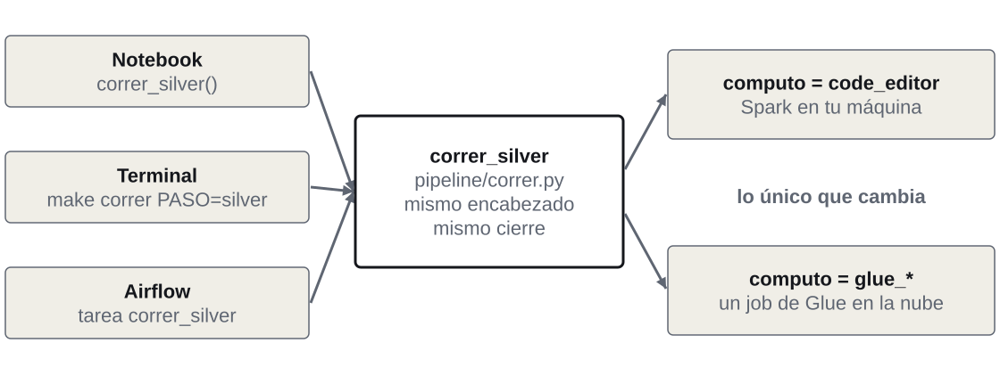
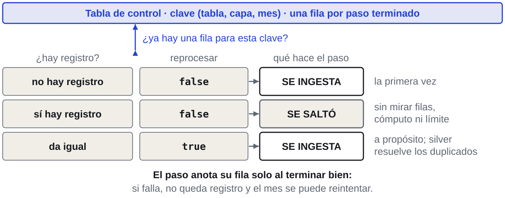
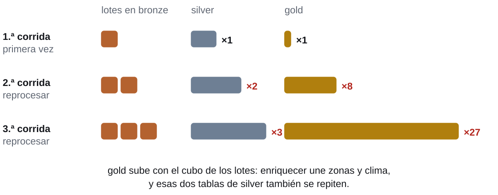
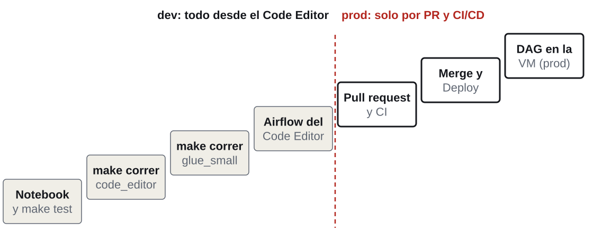

Big Data e Ingeniería de Datos
Clase 7 · Un pipeline completo en dev y cómo prepararlo para prod
Posgrado UdeM · 23 nov 2026
Antes de la clase, cada persona migró su cuenta (curso/clase07/README.md) y dejó abierto el Code Editor con una terminal. Si el Space se apagó (se apaga solo tras 60 minutos sin uso), se enciende con Run space. La secuencia de hoy: aclarar lo que cambia respecto a las clases 5 y 6 y dónde corre cada cosa (dev y prod); empezar limpios con resetear_entorno en dev; construir las funciones en el Notebook 1 con 1 000 viajes, en el dev de verdad; volver a resetear dev y pasarlas a los .py; correr las tareas del DAG una por una, con Athena entre cada una, y notar los problemas; crear la tabla en Snowflake y correr el DAG completo desde la interfaz; resetear y correr todo otra vez, que funciona una vez; repetir con reprocesar=true y ver cómo se duplican silver, gold y Snowflake, con la explicación completa; dimensionar con tiempos reales; y dejarlo listo para llevarlo a prod con un pull request en la clase 8. Hoy el trabajo es individual y la única ayuda es el instructor; el Taller 2 se hace en equipos y arranca mañana. Tiempo: 1 min. Siguiente: ¿Cómo construyo un pipeline en dev, lo llevo a prod sin duplicar nada y sé cuánto cómputo necesita?
¿Cómo construyo un pipeline en dev, lo llevo a prod sin duplicar nada y sé cuánto cómputo necesita?
Caso del curso: ¿la lluvia cambia los viajes en NYC?
Problema: en las clases 5 y 6 cada persona escribió funciones que corrían en su máquina. Un pipeline de verdad corre en la nube, lo ejecuta un programa y no una persona, y a veces se repite: por un fallo, por un reproceso o por una prisa. Si esa repetición duplica filas, cualquier suma queda inflada y nadie recibe un error. Pide a dos personas que digan qué puede salir mal cuando el mismo mes se procesa dos veces y anota las respuestas en una hoja visible: la clase las contesta una por una (duplicados, cifras infladas, costo, prod contaminado desde dev). Conversación de 2 min. Tiempo: 1 min. Siguiente: Hoy construimos y probamos un pipeline en dev; en la clase 8 lo llevamos a prod.
Hoy construimos y probamos un pipeline en dev; en la clase 8 lo llevamos a prod

Cambiar de Spark en el Code Editor a Glue es cambiar solo el cómputo.
Problema: hoy mezclamos varias herramientas (un notebook, make, Airflow, Athena, GitHub) y sin un mapa cada una parece suelta. Este diagrama las coloca sobre una sola línea. Las fuentes (viajes, zonas, clima) entran a cuatro pasos. Bronze guarda cada fuente tal como llega. Silver es el espejo limpio de cada fuente: una tabla por fuente, sin join. Gold responde una pregunta de negocio. Snowflake recibe la tabla de gold para consultarla con SQL. Arriba está la tabla de control, BIGDATA.CONTROL_DEV.WATERMARK en dev y CONTROL_PROD en prod: cada paso le pregunta si ya hizo ese mes y le anota una fila al terminar bien. Cada paso es una función con su nombre (correr_bronze, correr_silver, correr_gold, cargar_snowflake) y es la misma en un notebook, con make correr y como tarea del DAG pipeline_taxi. El color cobre es solo de bronze, gris de silver y ocre de gold; el azul, solo de la tabla de control. Tiempo: 1 min. Siguiente: ¿Qué dijimos en las clases 5 y 6 que hoy cambia?
¿Qué dijimos en las clases 5 y 6 que hoy cambia?
Las clases 1 a 6 ya se dictaron y sus notebooks y decks no se reescriben: aquí se aclaran en voz alta. Son seis cosas, repartidas en tres slides. Tono: no es un error de nadie, es que el curso fue construyendo el pipeline por capas y hoy se junta. Tiempo: 1 min. Siguiente: Tres aclaraciones sobre quién corre qué.
Tres aclaraciones sobre quién corre qué
«Con las funciones del equipo»
Lee el crudo de dev o prod
Corre el código de la casa
Retractación 1. En el deck de la clase 6 y en el Taller dijimos que el pipeline correría en Glue «con las funciones del equipo». Lo que eso quiere decir es «con el código de tu fork». En Glue corre bronze.py de la casa, que hace lo mismo que las cuatro funciones de ingesta de la clase 5; esas funciones ya no están en el repositorio: se quedaron en el material de las clases 5 y 6, que se ve funcionando con la etiqueta antes-limpieza-clase07. Su código vuelve a escena en el Taller, en bronze.py, silver.py, gold.py y carga.py. Retractación 2. Dijimos que tus funciones recibían base_bronze=s3://<bucket>/bronze y que Athena leía tu bronze: no. Tu bronze_alumno se quedó en el disco del Code Editor; Athena lee el crudo (_crudo/) del lake. Desde hoy el lake está separado por entorno: s3://<lake>/dev/... y s3://<lake>/prod/... Retractación 3. El lab de la clase 6 era una versión para entender, no lo que corre en Glue; la tabla «función del lab, función de la casa» está en el README. Y el silver de la casa filtra pero no deduplica: los 13 907 descartes de enero (19 663 930 viajes en bronze y 19 650 023 en silver) vienen de los filtros, no de duplicados. Tiempo: 2 min. Siguiente: Tres aclaraciones más: control, modo local y rol.
Tres aclaraciones más: control, modo local y rol
Local, muestra, spark_local
ACCOUNTADMIN y COMPUTE_WH
Retractación 4. En la clase 5 la tabla de control era una puerta («SE SALTÓ»); en Glue, hasta ayer, era solo un registro. Hoy es una puerta en todos lados y con cualquier cómputo: si hay registro y no pides reprocesar, se salta, en un notebook, con make, en Airflow y en Glue. Retractación 5. Desaparecen el entorno local, la muestra y spark_local: el Code Editor ahora es un cómputo (code_editor) que lee y escribe en S3 de dev. Antes «local» significaba cuatro cosas distintas; ahora el entorno es dev o prod, el cómputo es code_editor o Glue, y Airflow es el del Code Editor o el de la VM. Retractación 6. En las clases 1 a 6 usamos ACCOUNTADMIN y COMPUTE_WH. Para todo lo del Taller se usan BIGDATA_DEV y BIGDATA_WH: ACCOUNTADMIN no puede crear ni alterar en BIGDATA.DEV, y BIGDATA_WH es el warehouse que tiene el freno de costo. Todo .sql de hoy empieza con USE ROLE BIGDATA_DEV; USE WAREHOUSE BIGDATA_WH; USE DATABASE BIGDATA;. Tiempo: 2 min. Siguiente: Antes y ahora: lake, control y comandos.
Antes y ahora: lake, control y comandos
bronze/ y muestra/ en la raíz
silver fhvhv_trips/pickup_date
CONTROL_DEV y CONTROL_PROD
Esta tabla es la misma del README de la clase 7. Primera fila: el lake. Segunda: silver ya no está particionado por día de recogida; es el espejo de bronze, una tabla por fuente (fhvhv, clima, taxi_zones) con carpeta mes=AAAA-MM. Tercera: la tabla de control de la práctica (BIGDATA.CONTROL.WATERMARK) queda como historia; las del pipeline son una por entorno. Cuarta: DAILY_ZONE_METRICS deja de ser «la tabla»; cada equipo nombra las suyas y viven en BIGDATA.DEV o BIGDATA.PROD. Quinta: make muestra y make run-local ya no existen; se usa make correr. Si alguien tiene un .sql de la clase 6 de Athena, ya no funciona: apuntaba a bronze/ de la raíz; hoy se usan los de curso/clase07/athena. Tiempo: 1 min. Siguiente: Antes de seguir, comprueba tu migración.
Antes de seguir, comprueba tu migración
Haz clic en Terminal > New Terminal.
Escribe cd ~/bigdata y presiona Enter.
Escribe make doctor: no debe marcar fallos.
Escribe make rutas ENTORNO=dev: las rutas empiezan con dev.
NOTEBOOK Code Editor · terminal
Dónde: el Code Editor, menú Terminal > New Terminal. Esta es la comprobación «Antes de seguir» del README; la mayoría ya la hizo antes de la clase, pero hoy nadie avanza sin ella. Entrada 1: cd ~/bigdata entra a la carpeta del repositorio (siempre se escribe, para no depender de dónde estaba la terminal). Entrada 2: make doctor es un diagnóstico (versiones, Python 3.12, AWS, Snowflake, jars de S3A, que PIPELINE_ENTORNO sea dev). Salida esperada: una lista de líneas ok sin ningún fallo; si dice «PIPELINE_ENTORNO=prod en esta terminal», corre unset PIPELINE_ENTORNO. Si dice que faltan los jars, corre make jars-s3a. Entrada 3: make rutas ENTORNO=dev imprime la tabla de carpetas del entorno: cada ruta debe empezar con s3://bigdata-lake-<tu cuenta>-us-east-2/dev/. Es solo informativo: no cambia con qué entorno corres. Quien no pasó la migración levanta la mano y se queda con el instructor: es el riesgo principal de la clase. Tiempo: 2 min. Siguiente: ¿Quién decide si lo que corro es dev o prod?
¿Quién decide si lo que corro es dev o prod?
Problema: hasta ayer, dev y prod compartían la carpeta bronze/. Una corrida de prueba en dev creaba un lote nuevo y la siguiente corrida de silver en prod lo leía sin que nadie lo hubiera decidido. La pregunta de esta parte es quién decide el entorno. Respuesta corta, que se desarrolla en las próximas slides: tú no. Tiempo: 1 min. Siguiente: Dev y prod no comparten ninguna carpeta de S3 ni ningún esquema de Snowflake.
Dev y prod no comparten ninguna carpeta de S3 ni ningún esquema de Snowflake

El rol BIGDATA_DEV no puede escribir en PROD ni en CONTROL_PROD.
Problema: ¿cómo evitamos que algo de dev contamine prod? Con carpetas y esquemas separados. Dev escribe en s3://<lake>/dev/ y en BIGDATA.DEV; prod, en s3://<lake>/prod/ y en BIGDATA.PROD. Cada entorno tiene además su tabla de control: BIGDATA.CONTROL_DEV.WATERMARK y BIGDATA.CONTROL_PROD.WATERMARK. code/, dags/, logs/ y tmp/ no son de ningún entorno: son del lake. Todo lo que corres desde el Code Editor (terminal, notebook, make, Airflow del Code Editor) es dev. Prod solo lo escribe la VM de Airflow, que recibe el código por CI/CD al hacer merge a main. Honestidad sobre el alcance: son barandillas contra errores, no un control contra el dueño de la cuenta; el control real es Snowflake, donde el rol BIGDATA_DEV no puede escribir en PROD ni en CONTROL_PROD, más el pull request. Lo vamos a comprobar con un INSERT que falla al final de la clase. Tiempo: 2 min. Siguiente: El entorno no se elige: lo decide dónde corres.
El entorno no se elige: lo decide dónde corres
Terminal, notebook o make
Airflow de la VM, tras CI/CD
Problema: si el entorno fuera un parámetro, alguien lo cambiaría a prod por error o por prisa. Regla del curso: el entorno no es un parámetro de nadie. entorno_actual() lee la variable PIPELINE_ENTORNO, que vale dev por defecto; scripts/correr.sh y airflow-local.sh la fuerzan a dev; la VM la fija a prod en su docker-compose. Si en el Code Editor escribes make correr ENTORNO=prod, el comando avisa que ignora el entorno y sigue en dev. En el código, prod se rechaza con code_editor y se rechaza siempre si la conexión a Snowflake no usa el rol BIGDATA_PROD. Hay dos cosas distintas que sí se eligen: el cómputo (dónde se calcula) y el límite de filas. Entorno y cómputo son independientes: en dev puedes calcular con Spark del Code Editor o con Glue. Tiempo: 2 min. Siguiente: pipeline.yaml es lo único que cambias para correr.
pipeline.yaml es lo único que cambias para correr
# pipeline.yaml (raíz del repositorio)
computo: code_editor # glue_small | glue_medium | glue_large
limite: "1000" # "1000" | "100000" | "todos"
mes: "2024-01" # AAAA-MM; vacío = config/dev.yaml
reprocesar: false # true = ignora la tabla de control
El entorno no aparece: es automático. Lo que escribas en un comando o en el formulario gana sobre este archivo.
Problema: ¿dónde se cambian las perillas sin tocar código? En un solo archivo, con un comentario por línea. Computo decide dónde se calcula; limite, cuántas filas se leen de cada fuente (1 000 o 100 000 con code_editor; todos solo con Glue); mes, qué mes se procesa; reprocesar, si se ignora la tabla de control. Precedencia: el argumento del comando, de la función o del formulario del DAG gana sobre pipeline.yaml, y este gana sobre el valor por defecto. Un cambio en el yaml tarda unos 30 segundos en llegar al formulario del DAG. Prod no lee este archivo: siempre usa Glue y limite todos. Si el yaml trae un valor inválido (por ejemplo limite: 12345), el pipeline no se rompe: usa el valor por defecto y avisa en el encabezado. Tiempo: 2 min. Siguiente: El mismo paso corre desde un notebook, con make o en Airflow, y solo cambia el cómputo.
El mismo paso corre desde un notebook, con make o en Airflow, y solo cambia el cómputo

Un solo código, tres formas de lanzarlo, dos lugares donde calcular.
Idea de ingeniería: una sola función por paso, sin copias. correr_bronze, correr_silver, correr_gold y cargar_snowflake viven en pipeline/correr.py. Un notebook las llama como funciones de Python; make correr las llama por el CLI python -m pipeline.run; el DAG pipeline_taxi tiene una tarea por función, con el mismo nombre. Todas imprimen el mismo encabezado y cierre, que lo imprime solo correr.py. Pasar de Spark en el Code Editor a Glue cambia solo el cómputo: no cambia una línea de lógica. Eso es lo que permite probar barato en code_editor y confiar en que en Glue hace lo mismo. Con glue_*, la función lanza el job de Glue con el código de tu árbol de trabajo (se sube a code/dev/), nunca con el de main. Tiempo: 2 min. Siguiente: Dónde se cambia cada cosa (1 de 2).
Dónde se cambia cada cosa (1 de 2)
yaml, LIMITE= o formulario
yaml, COMPUTO= o formulario
Esta es la tabla aprobada «dónde se cambia cada cosa»; está en el README. Fila 1: el límite de filas (1000, 100000, todos) en pipeline.yaml, con LIMITE= en make, con limite= en la función o en el formulario del DAG; todos solo con Glue y en prod siempre es todos. Fila 2: el cómputo, igual; es lo único que cambia entre el Code Editor y Glue. Fila 3: el mes y si se reprocesa; la tabla de control decide si se salta. Fila 4: el entorno no se cambia: es automático. Fila 5: pasar algo a prod es PR, merge a main, CI/CD y el DAG en la VM; nunca desde el Code Editor. Fila 6: la lógica del pipeline vive solo en bronze.py, silver.py y gold.py (y la tabla de tu gold en carga.py); lo demás es de la casa. Tiempo: 1 min. Siguiente: Dónde se cambia cada cosa (2 de 2).
Dónde se cambia cada cosa (2 de 2)
No se cambia: es automático
Solo bronze, silver y gold
Segunda mitad de la tabla «dónde se cambia cada cosa». Fila 4: el entorno no se cambia: es automático; el código se niega a correr prod fuera de la VM. Fila 5: pasar algo a prod es PR, merge a main, CI/CD y el DAG en la VM; nunca desde el Code Editor. Fila 6: la lógica del pipeline vive solo en bronze.py, silver.py y gold.py (y la tabla de tu gold en carga.py); lo demás es de la casa. Tiempo: 1 min. Siguiente: Ahora continuamos con resetear_entorno: empezamos limpios.
Ahora continuamos con resetear_entorno: empezamos limpios
– El DAG que borra todo dev, con salvaguardas.
– Dev limpio, para ver cada paso sin restos.
NOTEBOOK Airflow del Code Editor
Transición, en voz alta: ahora continuamos con resetear_entorno. Problema: antes de construir nada, hay que saber en qué estado está dev. Si quedaron lotes, registros o tablas de una prueba anterior (de la migración, de un ensayo, de la clase pasada), todo lo que midamos hoy estará contaminado. Borrar a mano en tres sistemas (S3, Snowflake y la tabla de control) es donde alguien se equivoca; el DAG resetear_entorno lo hace en orden y con salvaguardas. Se entrega hoy el de dev (el del Airflow del Code Editor); el de prod, que solo existe en la VM, se muestra mañana. Empezamos encendiendo Airflow. Tiempo: 1 min. Siguiente: Enciendes Airflow con make airflow-local.
Enciendes Airflow con make airflow-local
Escribe cd ~/bigdata y presiona Enter.
Escribe make airflow-local y presiona Enter.
Copia la URL que termina en /ports/8080/ y la contraseña.
NOTEBOOK Code Editor · terminal
Dónde: la terminal. make airflow-local instala Airflow con pip en ~/.airflow-local solo la primera vez, levanta nginx en el puerto 8080 y airflow standalone, con los DAGs del repositorio; exporta PIPELINE_ENTORNO=dev: este Airflow es siempre dev. Al arrancar lee el secreto <prefijo>/snowflake para la conexión snowflake_default. Salida esperada: la URL (UI: https://<id-del-space>.studio.us-east-2.sagemaker.aws/codeeditor/default/ports/8080/) y la contraseña. Error común: en vez de la URL ves <id-del-space>: reemplázalo por el subdominio de la URL del Code Editor que tienes abierta. Si Spark de un notebook sigue encendido, la memoria no alcanza: se apaga. Tiempo: 2 min. Siguiente: Entras a Airflow y abres resetear_entorno.
Entras a Airflow y abres resetear_entorno
Abre la URL en una pestaña nueva y entra como admin.
Haz clic en Dags y activa pipeline_taxi y resetear_entorno.
Haz clic en el nombre resetear_entorno.
NOTEBOOK Airflow del Code Editor
Los DAGs nuevos aparecen pausados: la página Home dice Active Dags 0 hasta que activas el interruptor. En la lista deben aparecer pipeline_taxi, resetear_entorno (pausado por diseño: hay que activarlo a propósito). Activamos pipeline_taxi ahora para no volver a esta pantalla después. Errores comunes: la UI sale en blanco o «Unsupported URL path» (la URL tiene que ser la del proxy del Code Editor, con /codeeditor/default/ports/8080/); «Invalid or Expired Auth Token» (se recarga la pestaña y se vuelve a entrar). Tiempo: 2 min. Siguiente: resetear_entorno borra todo el entorno de ese Airflow, y nada más.
resetear_entorno borra todo el entorno de ese Airflow, y nada más
– Todo en s3 dev/, CONTROL_DEV y las tablas de BIGDATA.DEV.
– Prod, el stage LAKE_GOLD, Athena y code/.
– Control primero: si falla, queda «no procesado».
Alcance exacto del entorno de este Airflow, y de ningún otro: las capas de S3 (todos los objetos bajo s3://<lake>/dev/, incluidos _crudo y los marcadores _$folder$; con «Conservar el crudo» marcada se deja bronze/_crudo/), la tabla de control (DELETE FROM BIGDATA.CONTROL_DEV.WATERMARK), y las tablas y vistas de BIGDATA.DEV (incluida DAILY_ZONE_METRICS de la historia). No toca el otro entorno, ni CONTROL ni CONTROL_PROD, ni el stage LAKE_GOLD ni el formato PARQUET_FF (los gestiona Terraform), ni Athena (las tablas externas quedan apuntando a carpetas vacías), ni code/, dags/, logs/ o tmp/. Orden de las tareas: validar, contar, vaciar_control, borrar_snowflake, borrar_s3, resumen. El control va primero: si algo falla a medias, queda «no procesado», nunca «procesado sin datos». Tiempo: 2 min. Siguiente: Lanzas resetear_entorno solo para listar.
Lanzas resetear_entorno solo para listar
En Dags, activa el interruptor de resetear_entorno.
Haz clic en Trigger y deja Solo listar marcada.
Haz clic en el segundo Trigger y lee el log de contar.
NOTEBOOK Airflow del Code Editor
Salvaguardas del DAG: nace pausado y sin calendario; solo_listar viene marcada, así que la primera corrida cuenta, lista y termina. Los campos del formulario son Entorno (solo admite dev: no hay otra opción), Solo listar, Confirmación y Conservar el crudo. El log de contar dice cuántos objetos hay en S3, cuántos registros en CONTROL_DEV y qué tablas hay en BIGDATA.DEV: si dev está limpio, cero; si hay restos de otra prueba, aquí se ven. Es un ensayo seguro: no borra nada. Tiempo: 2 min. Siguiente: Lanzas resetear_entorno para borrar dev.
Lanzas resetear_entorno para borrar dev
Haz clic en Trigger, desmarca Solo listar y marca Conservar el crudo.
En Confirmación escribe exactamente borrar dev.
Haz clic en el segundo Trigger: seis tareas en verde.
NOTEBOOK Airflow del Code Editor
Para borrar hay que desmarcar solo_listar y escribir la confirmación: borrar dev (en prod sería «borrar prod» seguido del ID de la cuenta AWS, que sale de aws sts get-caller-identity). No hay un valor por defecto que borre. Antes de borrar se exige el rol del entorno (BIGDATA_DEV; ACCOUNTADMIN se rechaza) y se detiene si entre contar y cada paso de borrado cambia el recuento. El prefijo de S3 sale de ruta_lake y se verifica que empiece por dev/; el esquema es BIGDATA.DEV y se valida con una expresión regular. Marcamos Conservar el crudo porque el archivo de enero (450 MB) no cambia y así no se baja otra vez. Cada tarea registra qué borró y cuánto. Error común: «La confirmación no coincide»: se escribió con mayúsculas, con tilde o con otra palabra; debe ser exactamente borrar dev. Tiempo: 2 min. Siguiente: Resetear prod cuesta en AWS, en Snowflake y en reputación.
Resetear prod cuesta en AWS, en Snowflake y en reputación
– Bajar y reprocesar el año: horas de Glue.
– Volver a cargar: créditos del warehouse.
– Una cifra que desaparece sin aviso.
Mensaje de clase: resetear dev es barato y educativo; resetear prod cuesta en AWS, en Snowflake y en reputación. En AWS: el año completo son 239 470 448 viajes y unos 5.4 GB de crudo; reprocesar costó unos 9 minutos de Glue large para bronze (medida del 20 nov.) y más. En Snowflake: créditos de warehouse para volver a cargar. En reputación: si alguien consulta una tabla que mañana no existe, la confianza se pierde. Por eso el DAG de prod existe solo en la VM, con el rol de prod, con una confirmación que incluye el ID de la cuenta, y se muestra en la clase 8, no hoy. El rol de dev no puede escribir en PROD ni en CONTROL_PROD, y el rol de la VM no tiene acceso a dev/: cada Airflow resetea únicamente su propio entorno. Tiempo: 2 min. Siguiente: Ahora continuamos con el Notebook 1.
Ahora continuamos con el Notebook 1
– Cada función, una por una, con 1 000 viajes.
– Sabrás por qué la puerta evita duplicar un mes, y habrás dejado datos reales en dev.
NOTEBOOK 01_construir_paso_a_paso
Transición, en voz alta: ahora continuamos con el Notebook 1, 01_construir_paso_a_paso. Problema: un pipeline es una cadena de funciones; si las dejas correr sin haberlas entendido, el día que algo falle no sabrás por dónde empezar. Aquí las construimos una por una con 1 000 viajes en lugar de 20 millones y las probamos varias veces. El instructor conduce; cada persona sigue en su Code Editor, celda por celda, con Shift + Enter. Este notebook corre contra el dev de verdad, sin laboratorio: Spark del Code Editor lee y escribe en s3://<lake>/dev/ y la tabla de control es BIGDATA.CONTROL_DEV.WATERMARK (conexión por el secreto bigdata/snowflake, rol BIGDATA_DEV). No se escribe nada en el disco. Como lo que escribe es de verdad, al terminar volvemos a correr resetear_entorno en dev para empezar limpios antes de las tareas del DAG. El límite de 1 000 filas se aplica solo en bronze. Importa las herramientas de la casa y nunca las copia. Tiempo: 1 min. Siguiente: Copias el notebook a una carpeta tuya para no tocar el del repositorio.
Copias el notebook a una carpeta tuya para no tocar el del repositorio
# En la terminal del Code Editor (copia el bloque entero):
mkdir -p ~/clase07_mis_notebooks && \
cp ~/bigdata/curso/clase07/01_*.ipynb ~/clase07_mis_notebooks/
ls ~/clase07_mis_notebooks
Debes ver el archivo .ipynb. Así tus cambios no entran a un commit por accidente.
NOTEBOOK Code Editor · terminal
Dónde: la terminal del Code Editor. Problema: si editas el notebook dentro del repositorio, el siguiente git pull choca con tus cambios y el archivo puede entrar a un commit sin que lo notes. Entrada: mkdir -p crea la carpeta ~/clase07_mis_notebooks (la opción -p evita error si ya existe); cp copia el notebook; ls lo lista. Salida esperada: 01_construir_paso_a_paso.ipynb. Este notebook es tu banco de trabajo: ahí cambias las funciones, las pruebas con 1 000 viajes y, cuando funcionan, las copias a los .py. Error común: «No such file or directory» al copiar significa que el repositorio no está en ~/bigdata o que falta el git pull; se corre cd ~/bigdata && git pull. Tiempo: 1 min. Siguiente: Abres el notebook 1 y eliges el kernel.
Abres el notebook 1 y eliges el kernel
Code Editor · explorador de archivos
Abre la carpeta clase07_mis_notebooks.
Haz doble clic en 01_construir_paso_a_paso.ipynb.
Arriba a la derecha elige el kernel Python (bigdata).
Apaga Airflow con make airflow-local-down.
NOTEBOOK 01_construir_paso_a_paso
Dónde: el Code Editor. El kernel es el programa Python que ejecuta las celdas; si eliges uno equivocado, las librerías no están instaladas. Se elige siempre Python (bigdata), que es el .venv del proyecto. No se eligen los kernels Glue PySpark o SparkMagic: abren una sesión de AWS Glue en la nube y esa sesión cobra mientras está abierta. Paso 4: en esta máquina solo cabe un proceso de Spark a la vez (7.6 GB compartidos con Airflow); por eso Airflow del Code Editor debe estar apagado mientras se usa el notebook. Error común: no aparece Python (bigdata): corre cd ~/bigdata && make reparar-entorno y recarga la ventana. Medida en el ensayo del 22 y 23 de noviembre: Airflow del Code Editor ocupa unos 5 GB de los 7.6 GB de la máquina; con Spark encendido encima ya no queda holgura. En el ensayo, con Airflow sin servidor web y corriendo el DAG completo, la memoria disponible mínima fue de 3 890 MB. Tiempo: 1 min. Siguiente: Ejecutas las Celdas 1 a 3.
Ejecutas las Celdas 1 a 3
Haz clic en la Celda 1 y presiona Shift + Enter.
Ejecuta la Celda 2: imprime la corrida y el encabezado.
Ejecuta la Celda 3: imprime las carpetas de dev.
NOTEBOOK 01_construir_paso_a_paso
Celda 1: verifica que el kernel sea el del proyecto (la ruta debe contener .venv), que Java esté disponible y deja el repositorio en la ruta de búsqueda para escribir from pipeline... import. Celda 2: cargar_configuracion(limite="1000") arma la corrida y banner(corrida, "bronze", "2024-01") imprime el mismo encabezado que mostrarán todas las corridas del curso. Celda 3: donde_estoy("dev") imprime una tabla con la ruta de cada capa. Qué observar: entorno='dev', computo='code_editor', limite='1000'; en Lee aparece _crudo/ (el archivo tal como se descargó) y en Escribe, la carpeta de bronze de dev; la última línea es la tabla de control, BIGDATA.CONTROL_DEV.WATERMARK. Error común: el AVISO «este kernel no es el del proyecto»; se elige Python (bigdata) y se reinicia el notebook. Tiempo: 1 min. Siguiente: El encabezado dice entorno, cómputo, qué lee y qué escribe antes de tocar nada.
El encabezado dice entorno, cómputo, qué lee y qué escribe antes de tocar nada
Entorno : DEV
Cómputo : code_editor
Paso : bronze
Mes : 2024-01
Límite : 1000
Reprocesar : false
Lee : s3://<tu-lake>/dev/bronze/_crudo/fhvhv/mes=2024-01/
Escribe : s3://<tu-lake>/dev/bronze/fhvhv/mes=2024-01/
Control : BIGDATA.CONTROL_DEV.WATERMARK
Las rutas son s3://<tu-lake>/dev/, con tu lake bigdata-lake-<tu cuenta>-us-east-2: es el dev de verdad.
NOTEBOOK 01_construir_paso_a_paso
Problema: ¿cómo sé, antes de que se ejecute algo, en qué entorno estoy y dónde va a escribir? El encabezado lo dice. Es el mismo en la consola, el notebook, el log de Airflow, el log de Glue y prod (en prod, la línea Entorno dice PROD con una advertencia). Las líneas Lee y Escribe salen de la misma función de rutas que usa el código (ruta_lake), no se escriben a mano. En el notebook las rutas son s3://bigdata-lake-<tu cuenta>-us-east-2/dev/..., exactamente lo que muestra la slide: no hay laboratorio ni disco local, escribimos en el dev de verdad. Al final de cada paso hay un cierre con una línea por tabla: filas leídas, escritas y si se saltó o registró; lo veremos en la Celda 20. Tiempo: 1 min. Siguiente: Ejecutas las Celdas 4 y 5.
Ejecutas las Celdas 4 y 5
Ejecuta la Celda 4: Spark enciende y dice su versión.
Ejecuta la Celda 5: sube los tres archivos crudos a S3.
Espera: los viajes de enero pesan unos 450 MB.
NOTEBOOK 01_construir_paso_a_paso
Celda 4: get_spark("code_editor") crea una sesión local[2] con 2 GB de memoria, la misma configuración del pipeline. Usa los .jar de S3A (los que bajó make jars-s3a) para leer y escribir s3://. Celda 5: traer_crudo_viajes, traer_crudo_taxi_zones y traer_crudo_clima revisan en este orden: ¿el archivo ya está en _crudo/? no se descarga; ¿está en la ruta del diseño anterior? se mueve; si no está en ninguna parte, se descarga de la fuente. Cada una devuelve la ruta completa y dice en voz alta qué hace (YA ESTÁ, DESCARGA...). El archivo se descarga y se guarda en s3://<lake>/dev/bronze/_crudo/, no en el disco: la primera vez baja unos 450 MB, y con 30 cuentas a la vez puede tardar. Las siguientes veces ya está en S3. Tiempo: 2 min. Siguiente: leer_crudo devuelve siempre las mismas 1 000 filas, y se comprueba leyendo dos veces.
leer_crudo devuelve siempre las mismas 1 000 filas, y se comprueba leyendo dos veces
viajes = leer_crudo(spark, "dev", "fhvhv", "2024-01", limite=1000)
otra = leer_crudo(spark, "dev", "fhvhv", "2024-01", limite=1000)
print(viajes.count()) # 1000
print(viajes.collect() == otra.collect()) # True
Un limit suelto de Spark podría traer filas distintas cada vez; leer_crudo usa coalesce(1).limit(n).
NOTEBOOK 01_construir_paso_a_paso
Problema: más adelante vamos a reprocesar el mismo mes y a comparar lo que sale. Eso solo sirve si cada lectura con límite trae las mismas filas. Un limit suelto de Spark puede devolver filas distintas según qué tarea termine primero. leer_crudo aplica el límite de forma determinista (coalesce(1).limit(n)): toma siempre las mismas n primeras filas del archivo. Entrada (Celdas 6 y 7): lee 1 000 filas, las cuenta, y lee otra vez para comparar fila por fila con collect(). Salida esperada: 1000 y True. Las Celdas 6 a 8 también muestran cinco columnas de los viajes y leen las zonas (265 filas) y el clima (31 días de enero). Si falla con otro número de filas, revisa que limite sea 1000 y no None. Tiempo: 2 min. Siguiente: La tabla de control guarda una fila por paso terminado.
La tabla de control guarda una fila por paso terminado
Una fila de BIGDATA.CONTROL_DEV.WATERMARK
Problema: si bronze corre dos veces para enero, enero queda dos veces: cada ingesta escribe un lote nuevo y nunca borra los anteriores. Hace falta que el pipeline pregunte antes de trabajar. La respuesta es la tabla de control: una tabla de Snowflake por entorno donde cada paso anota una fila al terminar bien. La clave de consulta es (TABLA, CAPA, MES). TABLA no lleva el entorno: es fhvhv, taxi_zones, clima, o el nombre de tu tabla de gold; MES es AAAA-MM, o sin_mes para las zonas. Las columnas completas, en orden, son FUENTE, CAPA, TABLA, MES, FILAS, INICIO, REPROCESAR, COMPUTO, LIMITE y LEIDAS; las últimas tres se guardan solo para informar, la puerta no las mira. Reprocesar no borra nada: cada corrida deja su fila y la historia queda completa. La tabla BIGDATA.CONTROL.WATERMARK de las clases 5 y 6 queda como historia. Tiempo: 1 min. Siguiente: La puerta tiene tres casos: sin registro ingesta, con registro salta, con reprocesar ingesta siempre.
La puerta tiene tres casos: sin registro ingesta, con registro salta, con reprocesar ingesta siempre

Es la misma regla en un notebook, con make, en Airflow, en Glue y en prod.
La regla de la puerta es una sola y es la del autor del curso: no hay lógica de alcance ni de comparar filas. Caso 1: no hay registro y reprocesar es false: se ingesta. Caso 2: hay registro y reprocesar es false: se salta, sea cual sea el número de filas, el cómputo o el límite del registro. Caso 3: reprocesar es true: se ingesta siempre; los duplicados que eso cause son problema de silver, y es justo lo que veremos hoy. Esto vale en todos lados: si el notebook registró enero, make correr dirá SE SALTÓ; si lo registró Airflow, el notebook dirá SE SALTÓ. Y el registro se anota al final y solo si el paso terminó bien: si falla a la mitad, no queda registro y el mes se puede reintentar. Vamos a construir esta puerta, función por función. Tiempo: 2 min. Siguiente: Ejecutas las Celdas 9 y 10.
Ejecutas las Celdas 9 y 10
Ejecuta la Celda 9: consulta CONTROL_DEV y sale una lista vacía.
Ejecuta la Celda 10: fija MES_ENSAYO, un mes de 2023.
Lee que enero de 2024 queda sin registros.
NOTEBOOK 01_construir_paso_a_paso
Problema: vamos a equivocarnos mientras construimos la puerta, y la tabla de control es la real: una fila de «ya procesado» para enero de 2024 sin datos detrás es justo el error que la tabla de control debe evitar. Celda 9: consultar_control("dev", "fhvhv", "bronze", "2024-01") va a Snowflake con el rol BIGDATA_DEV y devuelve [] si ningún paso ha terminado. Si tu cuenta ya trae un registro de una corrida anterior, queda anotado y se explica más abajo. Celda 10: no hay tabla de mentira; todos los ensayos de las celdas 10 a 17 escriben en la tabla real, pero con meses de 2023 (MES_ENSAYO = 2023-12 y otros), que el pipeline nunca procesa. La clave (TABLA, CAPA, MES) es distinta y enero de 2024 queda intacto. Esas filas se borran con el resetear_entorno del final del notebook. Error común: «No se encontró la tabla BIGDATA.CONTROL_DEV.WATERMARK»: falta make snowflake o make migrar-clase07. Tiempo: 1 min. Siguiente: Primera versión de debe_ingestar: si no hay registro se ingesta, y si lo hay se salta.
Primera versión de debe_ingestar: si no hay registro se ingesta, y si lo hay se salta
def debe_ingestar(corrida, tabla, mes):
registros = consultar_control(corrida.entorno, tabla, "bronze", mes)
hay_registro = len(registros) > 0
return not hay_registro
print(debe_ingestar(corrida, "fhvhv", "2024-01")) # True
Firma idéntica a la de bronze.py. La capa siempre es bronze, porque esta es la puerta de bronze.
NOTEBOOK 01_construir_paso_a_paso
Entrada (Celda 11): la función recibe la corrida (de ahí sale el entorno), la tabla y el mes; consulta la tabla de control con la clave (tabla, bronze, mes) y devuelve True si no hay registros. Salida esperada: True, porque el mes de ensayo (2023-12) todavía no tiene registros en la tabla real. Esta versión responde solo a la primera columna de la regla («¿hay registro?»); todavía no sabe reprocesar. Para probar el segundo caso necesitamos que exista un registro, y eso lo escribe otra función: registrar_ingesta. Pregunta a la clase: ¿qué pasa con esta versión si queremos repetir un mes a propósito? Respuesta: no se puede, y por eso hay una segunda versión. Tiempo: 1 min. Siguiente: registrar_ingesta anota la fila de bronze, solo después de escribir.
registrar_ingesta anota la fila de bronze, solo después de escribir
def registrar_ingesta(corrida, tabla, mes, fuente,
leidas, filas, inicio):
registrar_control(corrida, tabla, "bronze", mes,
filas, inicio, fuente, leidas)
inicio = datetime.now(UTC).replace(microsecond=0)
registrar_ingesta(corrida, "fhvhv", "2024-01",
url, 1000, 1000, inicio)
filas son las escritas; leidas es solo informativa. Si la escritura falla, esta función no se llama.
NOTEBOOK 01_construir_paso_a_paso
Problema: ¿cuándo se anota que un mes ya se procesó? Si se anota antes de escribir y la escritura se cae a la mitad, la tabla dice «procesado» pero los datos no están, y la puerta salta el mes para siempre. Si se anota después y la escritura falla, no queda registro y el mes se puede reintentar. Por eso: se registra al final y solo si todo salió bien. registrar_control es la función de la casa que escribe una fila; nuestra función solo la llama con la capa bronze. Entrada (Celda 12): registra una fila en la tabla real, con el mes de ensayo, y la imprime. Salida esperada: un diccionario con fuente, capa, tabla, mes, filas, inicio, reprocesar, computo, limite y leidas. Tiempo: 1 min. Siguiente: Ejecutas las Celdas 12 y 13.
Ejecutas las Celdas 12 y 13
Ejecuta la Celda 12: imprime la fila anotada.
Ejecuta la Celda 13: pregunta por tres claves distintas.
Comprueba que solo fhvhv de enero dice False.
NOTEBOOK 01_construir_paso_a_paso
Qué observar: ahora hay una fila con la tabla, la capa, el mes, filas, leidas, el computo, el limite y reprocesar. Al volver a preguntar a la puerta, fhvhv de enero dice False (se salta); el clima del mismo mes dice True y fhvhv de febrero dice True. La puerta salta solo la clave (fhvhv, bronze, 2024-01): el clima de enero y los viajes de febrero siguen abiertos. Esto responde una duda frecuente: ¿registrar fhvhv bloquea todo enero? No: la clave es la combinación tabla, capa y mes. Tiempo: 1 min. Siguiente: Se registra al final: si la escritura se cae, no queda registro y el mes se reintenta.
Se registra al final: si la escritura se cae, no queda registro y el mes se reintenta
def ingesta_de_mentira(corrida, tabla, mes, falla):
if not debe_ingestar(corrida, tabla, mes):
return "SE SALTÓ"
inicio = datetime.now(UTC).replace(microsecond=0)
if falla:
raise RuntimeError("se cayó la escritura")
registrar_ingesta(corrida, tabla, mes, url, 1000, 1000, inicio)
return "REGISTRÓ"
El registro va después del posible fallo. Se prueba con falla=True, después con False y otra vez con False.
NOTEBOOK 01_construir_paso_a_paso
Entrada (Celda 14): una ingesta de mentira que puede fallar a la mitad; empieza con una tabla de control vacía. Primero con falla=True: lanza el error, y después del fallo no queda ningún registro. Luego con falla=False: REGISTRÓ. Luego otra vez con falla=False: SE SALTÓ. Salida esperada: «La ingesta falló: se cayó la escritura a la mitad», «Registros después del fallo: 0», «Reintento: REGISTRÓ» y «Otro intento: SE SALTÓ». Si hubiéramos registrado al principio, el reintento habría quedado bloqueado por una fila que dice «procesado» sin que lo estuviera. Esta es la razón por la que el registro va al final. Tiempo: 2 min. Siguiente: La puerta final invierte mes_ya_procesado, que ya trae la regla de reprocesar.
La puerta final invierte mes_ya_procesado, que ya trae la regla de reprocesar
from pipeline.herramientas.control import mes_ya_procesado
def debe_ingestar(corrida: Corrida, tabla: str, mes: str) -> bool:
ya_esta_registrado = mes_ya_procesado(corrida, tabla, CAPA, mes)
if ya_esta_registrado:
return False
return True
Las tres filas de la regla: sin registro ingesta, con registro salta, con reprocesar ingesta siempre. Es la versión que tiene bronze.py.
NOTEBOOK 01_construir_paso_a_paso
Problema: hay motivos legítimos para repetir un mes: la fuente corrigió sus datos, se cambió el cómputo, el equipo quiere medir otra cosa. La versión 1 no permite repetir nunca. La corrida trae una perilla, reprocesar; si vale true, la puerta ignora la tabla de control. Reprocesar no borra nada: cada corrida deja su fila y la historia queda completa. La herramienta de la casa mes_ya_procesado(corrida, tabla, capa, mes) ya contiene las tres filas de la regla y responde True cuando hay que saltar; nuestra función solo invierte la pregunta. Esta es la versión exacta que tiene bronze.py. Entrada (Celda 15): se redefine la función; no imprime nada. Después (Celda 16) se prueban los tres casos contra lo que dice la tabla de verdad. Tiempo: 2 min. Siguiente: Ejecutas las Celdas 15 a 17: pruebas las tres reglas.
Ejecutas las Celdas 15 a 17: pruebas las tres reglas
Ejecuta la Celda 15: redefine debe_ingestar con mes_ya_procesado.
Ejecuta la Celda 16: tres casos, y cada uno dice coincide.
Ejecuta la Celda 17: enero de 2024 sigue sin registros.
NOTEBOOK 01_construir_paso_a_paso
Salida esperada de la Celda 16: tres filas, con mi puerta y lo que debe ser. «False, False: ingesta, coincide»; «True, False: salta, coincide»; «True, True: ingesta, coincide». La función caso arma cada situación con su propio mes de ensayo de 2023 (la tabla es la real y no se vacía) y dataclasses.replace para copiar la corrida cambiando solo reprocesar. Si alguna fila dice DIFERENTE, hay un error en la versión final; revisa la Celda 15. Con esto, nuestras dos funciones (debe_ingestar y registrar_ingesta) quedaron como las que trae bronze.py; la Celda 35 lo comprueba al final. La Celda 17 comprueba que los ensayos no tocaron enero de 2024: sin registros de bronze, la corrida de la parte 6 va a trabajar. Las filas de ensayo de 2023 se borran con resetear_entorno al final. Tiempo: 1 min. Siguiente: agregar_metadatos hoy no agrega nada, a propósito.
agregar_metadatos hoy no agrega nada, a propósito
– Agregar cinco columnas: lote, fecha, huella, fuente y archivo.
– Nada: devuelve la tabla tal cual. La escribe tu equipo.
NOTEBOOK 01_construir_paso_a_paso
Lo decimos en voz alta: es un problema a propósito. agregar_metadatos(df, fuente, archivo_origen, id_lote, fecha_ingesta) debería dejar, después de las columnas originales y en este orden, _fecha_ingesta, _id_lote, _hash_fila, _fuente y _archivo_origen. La huella _hash_fila identifica cada fila por sus valores. Hoy la función devuelve df tal cual; lleva dentro la marca # PENDIENTE(equipo), que es lo que buscan las pruebas del equipo para decir PENDIENTE en lugar de FALLA. Consecuencia: bronze guarda las filas sin decir de qué lote ni de qué archivo vienen, y silver no podrá saber qué filas ya vio. Escribir esta función es parte del trabajo de tu equipo en el Taller; hoy no la escribimos. Tiempo: 1 min. Siguiente: Ejecutas las Celdas 18 y 19.
Ejecutas las Celdas 18 y 19
Ejecuta la Celda 18: define agregar_metadatos sin metadatos.
Ejecuta la Celda 19: usar_mis_funciones las pone en bronze.
Comprueba tres líneas que empiezan con USA.
NOTEBOOK 01_construir_paso_a_paso
El pipeline ya trae su propio main de bronze, que hace la receta completa para las tres tablas: puerta, crudo, lectura, metadatos, escritura del lote y registro. Para que use nuestras tres funciones en este notebook, sin tocar todavía los .py, usamos usar_mis_funciones. Funciona solo en este proceso: si reinicias el kernel, vuelven las del repositorio. Salida esperada: «USA agregar_metadatos del cuaderno en pipeline.bronze (solo en este proceso)» y lo mismo para debe_ingestar y registrar_ingesta. Con un cómputo de Glue esto falla a propósito: tus funciones del notebook viven en este proceso y no viajan a Glue; para Glue se copian a bronze.py. Tiempo: 1 min. Siguiente: Ejecutas la Celda 20: bronze corre por primera vez.
Ejecutas la Celda 20: bronze corre por primera vez
Ejecuta la Celda 20 y espera el encabezado y el cierre.
Busca tres líneas con REGISTRÓ en el cierre.
Mira la línea ESCRIBE: termina en lote= y una fecha.
NOTEBOOK 01_construir_paso_a_paso
Entrada: correr_bronze(limite="1000") es una de las cuatro funciones de los pasos: la misma que corre la primera tarea del DAG pipeline_taxi y la que llama el CLI. Imprime el encabezado, hace el trabajo y cierra con una línea por tabla. Con limite 1000 cada fuente se recorta a 1 000 filas, justo después de leerla; las zonas son 265 y el clima 31, así que entran completas. Salida esperada: líneas YA ESTÁ, LEE (crudo), ESCRIBE (el lote en Parquet), SUBE (el marcador _LOTE_COMPLETO) y el cierre con REGISTRÓ. Esta corrida es de verdad: escribe en s3://<lake>/dev/bronze/ y anota en BIGDATA.CONTROL_DEV.WATERMARK. Más adelante resetear_entorno lo borra para que las tareas del DAG partan de cero. Tiempo: 2 min. Siguiente: El cierre dice, por tabla, filas leídas, escritas y la decisión.
El cierre dice, por tabla, filas leídas, escritas y la decisión
Cierre : paso=bronze mes=2024-01
fhvhv leyó=1000 escribió=1000 REGISTRÓ
taxi_zones leyó=265 escribió=265 REGISTRÓ
clima leyó=31 escribió=31 REGISTRÓ
Primera corrida: las tres tablas registran. En pantalla cada línea sigue con «en la tabla de control».
NOTEBOOK 01_construir_paso_a_paso
El cierre lo imprime solo pipeline/correr.py, igual en todos lados. Cada línea tiene el nombre de la tabla, las filas que leyó del crudo (limitadas a 1 000 en los viajes), las filas que escribió en el lote y la decisión: REGISTRÓ si trabajó y anotó la fila, o SE SALTÓ si la puerta se cerró. Con limite=1000: fhvhv 1 000 y 1 000, taxi_zones 265 y 265, clima 31 y 31. Tiempo: 1 min. Siguiente: Ejecutas las Celdas 21 a 23: la segunda corrida.
Ejecutas las Celdas 21 a 23: la segunda corrida
Ejecuta la Celda 21 sin cambiar nada.
Comprueba que las tres líneas dicen SE SALTÓ.
Ejecuta las Celdas 22 y 23: una sola carpeta lote=.
NOTEBOOK 01_construir_paso_a_paso
La puerta consultó la tabla de control real, encontró el registro de la primera corrida y no hizo nada: no hay lote nuevo, no hay filas repetidas. Termina en segundos. Celda 22: consultar_control devuelve la fila: filas=1000, leidas=1000, computo=code_editor, limite=1000 y reprocesar False. Celda 23: lista las carpetas de bronze de fhvhv en S3; debe haber una sola carpeta lote=<fecha>_<código>, a pesar de las dos corridas. Reprocesar a propósito (reprocesar=True) crearía un segundo lote: todavía no lo hacemos; lo haremos con las tareas del DAG, con Athena abierta. Para recordar: la puerta funciona igual en todos lados: en un notebook, con make, en Airflow y en Glue. Tiempo: 1 min. Siguiente: Silver es el espejo limpio de bronze, una tabla por fuente.
Silver es el espejo limpio de bronze, una tabla por fuente
– Guarda cada fuente tal como llegó.
– Pone cada columna en su tipo y descarta viajes imposibles.
– limpiar_viajes, clima_diario y limpiar_taxi_zones.
NOTEBOOK 01_construir_paso_a_paso
Problema: bronze guarda las filas como llegaron: viajes con distancia cero, duraciones imposibles, tipos mezclados. Silver es el espejo limpio de cada fuente: silver/fhvhv, silver/clima y silver/taxi_zones, con el mismo nombre que en bronze y sin join. Las funciones de limpieza son de la casa (limpiar_viajes, clima_diario, limpiar_taxi_zones, en silver.py). Las reglas de limpieza de viajes: distancia mayor que cero y menor de 100 millas, tarifa base mayor que cero, duración entre 1 y 180 minutos y recogida con ubicación. Aquí las probamos sobre el lote que acabamos de escribir pero no escribimos silver todavía: eso lo hace el paso silver, con make correr PASO=silver. Silver lee TODOS los lotes completos de bronze del mes. Tiempo: 1 min. Siguiente: Ejecutas las Celdas 24 y 25: la limpieza de silver.
Ejecutas las Celdas 24 y 25: la limpieza de silver
Ejecuta la Celda 24: bronze, silver y descartadas.
Mira que empresa dice Uber o Lyft.
Ejecuta la Celda 25: zonas y clima.
NOTEBOOK 01_construir_paso_a_paso
Entrada (Celda 24): leer_capa(spark, "dev", "bronze", "fhvhv", "2024-01") junta todos los lotes completos del mes (hoy hay uno) y silver.limpiar_viajes(bronze, ["2024-01"]) aplica los filtros y los tipos. Salida esperada: Filas en bronze 1000; filas en silver un poco menos; la diferencia son los descartados. Con los 1 000 viajes del ensayo no se descartó ninguno (silver también da 1 000); el archivo de enero completo descarta 13 907 de 19 663 930. Qué observar: distancia_mi y duracion_min son números, y empresa ya no es HV0003 sino Uber. Celda 25: las zonas con LocationID como entero (265 filas) y el clima con la fecha como fecha (31 filas). Error común: «No hay ningún lote completo en s3://.../dev/bronze/...»: bronze no corrió; se ejecutan las Celdas 19 a 21. Tiempo: 1 min. Siguiente: Ejecutas las Celdas 26 y 27: dos lotes de enero.
Ejecutas las Celdas 26 y 27: dos lotes de enero
Ejecuta la Celda 26: silver con dos lotes da el doble.
Ejecuta la Celda 27: deduplicar devuelve las mismas filas.
Di en voz alta: es el segundo problema a propósito.
NOTEBOOK 01_construir_paso_a_paso
Problema: bronze solo agrega; si alguien reprocesa enero, bronze tiene dos lotes con las mismas filas y silver los lee los dos. Lo simulamos sin escribir nada: bronze_viajes.unionByName(bronze_viajes) y la misma limpieza. Salida esperada: las filas de silver con dos lotes son exactamente el doble que con uno. Nadie recibió un error: cada viaje cuenta dos veces. Quien debe impedirlo es silver, con una función: deduplicar(df). En el repositorio hoy devuelve la tabla tal cual, y lo decimos en voz alta: es el segundo problema a propósito (Celda 27: «Filas después de deduplicar: 2×, debería ser N»). Su idea es dejar una sola fila por cada fila distinta, y para eso necesita saber qué filas son la misma: la huella que debería agregar agregar_metadatos. Las dos funciones van de la mano y las dos son del equipo. Tiempo: 1 min. Siguiente: La pregunta de gold de la casa no es la del Taller.
La pregunta de gold de la casa no es la del Taller
– ¿A qué hora y barrio se paga más por milla?
– Escribes otra, con tu tabla de gold.
NOTEBOOK 01_construir_paso_a_paso
Problema: silver deja tablas limpias, pero nadie decide con una tabla de un millón de viajes. Gold responde una pregunta de negocio con una tabla pequeña. La pregunta de la casa, para aprender la receta, es ¿a qué hora del día y en qué barrio se paga más por milla? No es la pregunta de ningún equipo del Taller 2: la tuya es otra y la escribes tú. La receta de un paso gold es: leer silver (viajes, zonas, clima), juntarlo con silver.enriquecer, aplicar tu función, validar y escribir reemplazando el mes. enriquecer une los viajes con las zonas (por pu_location_id, para saber el barrio) y con el clima (por la fecha), con left join: no se pierde ningún viaje. Gold no tiene huecos: solo agregas tu función a TABLAS_GOLD. Tiempo: 1 min. Siguiente: tarifa_por_milla_por_barrio agrupa por fecha, barrio y franja, y divide las sumas.
tarifa_por_milla_por_barrio agrupa por fecha, barrio y franja, y divide las sumas
franja = (F.when(F.hour("pickup_datetime") < 6, "madrugada")
.when(F.hour("pickup_datetime") < 12, "mañana")
.when(F.hour("pickup_datetime") < 18, "tarde").otherwise("noche"))
con_franja.groupBy("fecha", "borough", "franja").agg(
F.count(F.lit(1)).alias("viajes"),
F.sum("distancia_mi").alias("distancia"),
F.sum("total_pagado").alias("ingreso"))
# tarifa_por_milla = round(ingreso / distancia, 2)
La tarifa por milla es el cociente de las sumas, no el promedio de las tarifas de cada viaje.
NOTEBOOK 01_construir_paso_a_paso
Entrada (Celdas 28 a 31): enriquecer, la prueba de la franja sobre las 24 horas del día, la función completa, y la comparación con la de la casa. La franja convierte la hora de recogida en madrugada (0 a 5 h), mañana (6 a 11), tarde (12 a 17) y noche (18 a 23). Se agrupa por fecha, barrio y franja y se guardan los viajes, la suma de millas y la suma de lo pagado. La tarifa por milla es el cociente de las sumas, no el promedio de las tarifas de cada viaje: así un viaje de 0.1 millas no pesa igual que uno de 20. Redondeamos al final para que el redondeo de las sumas no mueva el cociente. Si el barrio es nulo (una zona que no está en el lookup) se llama Desconocido: no se pierde el viaje. Salida esperada: la suma de la columna viajes es igual a las filas del enriquecido (gold agrega, no pierde ni inventa viajes: esa es la primera regla de conciliación entre silver y gold) y la comparación con la función de la casa dice True y True. Tiempo: 2 min. Siguiente: Ejecutas las Celdas 28 a 31: gold.
Ejecutas las Celdas 28 a 31: gold
Ejecuta la Celda 28: los viajes ya traen barrio y lluvia.
Ejecuta las Celdas 29 y 30: la franja y tu función de gold.
Ejecuta la Celda 31: las dos comparaciones dicen True.
NOTEBOOK 01_construir_paso_a_paso
Qué observar en la Celda 30: la suma de la columna viajes debe ser igual a las filas del enriquecido; cada fila de gold resume muchos viajes. En la Celda 31 se compara tu función con tarifa_por_milla_por_barrio de gold.py, que es la de la casa: si la nuestra está bien, las dos tablas son idénticas, fila por fila. Dos True. Error común: un False en «Mismas filas» casi siempre es un redondeo distinto o un cálculo del promedio de tarifas en lugar del cociente de sumas. Tiempo: 1 min. Siguiente: Para cargar gold se crea en Snowflake una tabla con los mismos tipos.
Para cargar gold se crea en Snowflake una tabla con los mismos tipos
NOTEBOOK 01_construir_paso_a_paso
Problema: gold vive en S3 como Parquet. Para consultarlo con SQL en Snowflake hay que crear una tabla con las mismas columnas y tipos compatibles y cargarla. Si las columnas no coinciden, la carga se detiene antes de tocar nada y dice qué falta; antes, una columna nueva simplemente desaparecía sin aviso. Spark dice qué tipo tiene cada columna (dtypes); Snowflake usa otros nombres para lo mismo: date es DATE, string es VARCHAR, bigint es NUMBER(38,0) y double es FLOAT. La tabla la creas tú, a mano, en Snowsight: el código nunca crea tablas. El paso snowflake hace dos cosas en este orden: verificar_esquema_con_athena (compara las columnas de gold, tal como las ve Athena, con las de la tabla) y cargar_gold (reemplaza ese mes en la tabla con los Parquet de gold). Si la tabla no existe, cargar_gold se detiene con un error que imprime el SQL exacto que hay que ejecutar en Snowsight. Tiempo: 1 min. Siguiente: Ejecutas las Celdas 32 a 34: el CREATE TABLE de Snowflake.
Ejecutas las Celdas 32 a 34: el CREATE TABLE de Snowflake
Ejecuta la Celda 32: arma el CREATE TABLE.
Ejecuta la Celda 33: dice True.
Ejecuta la Celda 34: imprime el SQL; lo ejecutarás en Snowsight.
NOTEBOOK 01_construir_paso_a_paso
Celda 32: se imprimen los dtypes de tu gold, la equivalencia y el CREATE TABLE con el hueco {tabla}. Celda 33: se escribe DDL_TARIFA_POR_MILLA y TABLAS_A_CARGAR igual que en carga.py y se compara el CREATE TABLE armado con él ignorando espacios; debe decir True. Celda 34: nombre_tabla_snowflake("dev", "tarifa_por_milla_barrio") da BIGDATA.DEV.TARIFA_POR_MILLA_BARRIO y la celda imprime el SQL exacto, con USE ROLE, USE WAREHOUSE y USE DATABASE. El código no crea la tabla: la crearás tú en Snowsight más adelante, justo antes del DAG completo; aquí solo se ve el SQL. Tiempo: 1 min. Siguiente: La Celda 35 compara con los .py: «igual» es el repositorio, «DISTINTO» es lo que cambiaste.
La Celda 35 compara con los .py: «igual» es el repositorio, «DISTINTO» es lo que cambiaste
agregar_metadatos bronze.py firma: igual código: igual
debe_ingestar bronze.py firma: igual código: igual
registrar_ingesta bronze.py firma: igual código: igual
deduplicar silver.py firma: igual código: igual
_franja_del_dia gold.py firma: igual código: igual
tarifa_por_milla_por_barrio gold.py firma: igual código: igual
DDL_TARIFA_POR_MILLA carga.py texto: igual
Hoy todas dicen igual. Cuando cambies una función en el notebook, dirá DISTINTO: esa es la que copias al .py.
NOTEBOOK 01_construir_paso_a_paso
Problema: ¿cómo sé qué funciones cambié en el notebook y cuáles ya están en los archivos? La Celda 35 compara el código de cada función del notebook con el del módulo, ignorando los comentarios y las explicaciones entre comillas triples, y compara el texto del CREATE TABLE. Salida esperada hoy: «igual» en todas las líneas, porque las funciones del notebook son las mismas que trae el repositorio, con sus dos problemas dichos en voz alta. Cuando tu equipo cambie una función en el notebook (agregar_metadatos o deduplicar, por ejemplo), esa línea dirá DISTINTO: eso no es un error, es el aviso de que esa es la que hay que copiar al .py. Si dice igual, el .py ya la tiene. El notebook es tu banco de trabajo: ahí se cambia, se prueba con 1 000 viajes y recién entonces se copia. Tiempo: 2 min. Siguiente: Ejecutas la Celda 36: probar_mis_funciones corre las pruebas con las funciones del notebook.
Ejecutas la Celda 36: probar_mis_funciones corre las pruebas con las funciones del notebook
Ejecuta la Celda 36: corre las pruebas del equipo.
Lee una línea por prueba: OK, PENDIENTE o FALLA.
Comprueba el resumen: 9 PENDIENTE y 9 OK.
NOTEBOOK 01_construir_paso_a_paso
probar_mis_funciones recibe las funciones de este notebook, las pone un instante en los módulos del pipeline, corre tests/test_equipo_bronze.py y tests/test_equipo_silver.py, imprime una línea por prueba y deja todo como estaba. Salida esperada (medida): 9 PENDIENTE y 9 OK; código de salida 0. Las PENDIENTE son las cinco pruebas de agregar_metadatos y las cuatro de deduplicar: justo los dos problemas que dijimos en voz alta. Las OK son las de la puerta y el registro (debe_ingestar, registrar_ingesta y las firmas del contrato). Cuando tu equipo escriba esas dos funciones y borre la marca # PENDIENTE(equipo), esas líneas pasarán a OK sin cambiar la prueba. Una prueba PENDIENTE no es un error: dice qué función falta escribir. Tiempo: 2 min. Siguiente: Ejecutas la Celda 37: apagas Spark.
Ejecutas la Celda 37: apagas Spark
Ejecuta la Celda 37: imprime Spark apagado.
Haz clic en el menú Kernel.
Elige Shut Down Kernel para liberar la memoria.
NOTEBOOK 01_construir_paso_a_paso
Hemos probado la lógica de las cuatro partes del pipeline: bronze (con su puerta y su registro), silver (con el problema de los dos lotes), gold (con una pregunta de la casa) y snowflake (con su CREATE TABLE), y comprobamos qué funciones del notebook difieren de los .py. Apagamos Spark para liberar la memoria: en esta máquina solo cabe una sesión a la vez, y make test y los comandos de make abren la suya. Antes de seguir: este notebook dejó datos de verdad en dev (el crudo, un lote de bronze, filas de la tabla de control, incluidos los meses de ensayo de 2023), así que lo siguiente es resetear dev. Resumen en dos frases: el Notebook 1 es tu banco de trabajo, donde cada función se construye, se cambia y se prueba; y lo que cambias se copia al .py. Tiempo: 1 min. Siguiente: Reseteas dev otra vez para borrar lo que dejó el Notebook 1.
Reseteas dev otra vez para borrar lo que dejó el Notebook 1
En la terminal, ejecuta make airflow-local.
Lanza resetear_entorno con borrar dev y Conservar el crudo.
Comprueba en el log lo que borró.
Cuando termine, ejecuta make airflow-local-down.
NOTEBOOK Airflow del Code Editor
Problema: el Notebook 1 escribió de verdad en dev: el archivo crudo, un lote de bronze, filas en BIGDATA.CONTROL_DEV.WATERMARK (las de enero y las de los meses de ensayo de 2023) y una tabla vacía en BIGDATA.DEV. Si dejamos eso, la primera tarea del DAG saltaría bronze porque la tabla de control ya dice que enero está hecho. Por eso corremos resetear_entorno otra vez, igual que al principio: Airflow ya estaba apagado porque Spark y Airflow no caben a la vez; se enciende con make airflow-local, se lanza resetear_entorno con Solo listar desmarcada, Conservar el crudo marcada (el archivo de enero no cambia) y la confirmación borrar dev. Salida esperada: seis tareas en verde y, en el log de contar, el lote de fhvhv, los registros de control y la tabla de gold. Después, dev está limpio: se apaga Airflow con make airflow-local-down (make test y airflow tasks test usan Spark, y con Airflow y su servidor encendidos hay riesgo de «database is locked» en SQLite) y pasamos a ver cómo se copia una función del notebook a los .py. Error común: «La confirmación no coincide»: se escribió con mayúsculas, con tilde o con otra palabra; debe ser exactamente borrar dev. Tiempo: 3 min. Siguiente: Abre bronze.py y silver.py: es la misma función del notebook.
Abre bronze.py y silver.py: es la misma función del notebook
# src/pipeline/bronze.py · y en el notebook, Celda 18
def agregar_metadatos(
df: DataFrame, fuente: str, archivo_origen: str,
id_lote: str, fecha_ingesta: datetime
) -> DataFrame:
# PENDIENTE(equipo): hoy devuelve df tal cual
return df
# src/pipeline/silver.py · y en el notebook, Celda 27
def deduplicar(df: DataFrame) -> DataFrame:
# PENDIENTE(equipo): hoy devuelve df tal cual
return df
Misma firma y mismo cuerpo que en el notebook: pasarla es copiarla completa.
NOTEBOOK Code Editor · bronze.py
Problema: las funciones que probamos en el Notebook 1 tienen que vivir en los .py, porque el pipeline corre desde ahí. La buena noticia es que ya están: abre src/pipeline/bronze.py y src/pipeline/silver.py y compara con las celdas 18 y 27 del notebook. Misma firma, mismos parámetros y mismo cuerpo; la Celda 35 lo comprobó con «igual». Por eso pasar una función del notebook al .py es copiarla completa, desde el def hasta su último return, sin tocar la firma. Hoy las dos dicen return df con la marca # PENDIENTE(equipo): son los dos problemas a propósito. Tiempo: 2 min. Siguiente: Abres bronze.py y buscas la marca PENDIENTE.
Abres bronze.py y buscas la marca PENDIENTE
En el explorador abre bigdata, src y pipeline.
Haz doble clic en bronze.py y presiona Ctrl + F.
Busca PENDIENTE(equipo): está en agregar_metadatos.
NOTEBOOK Code Editor · bronze.py
Dónde: el Code Editor. Problema: las funciones del notebook y las de los .py son las mismas; hay que saber dónde, para poder editarlas en el Taller. Paso 1 a 2: src/pipeline/bronze.py. En el encabezado del archivo está explicado el problema a propósito. Paso 3: buscar PENDIENTE(equipo); en bronze.py aparece una vez, dentro de agregar_metadatos; en silver.py aparece una vez, dentro de deduplicar. Paso 4: el cuerpo solo dice return df. Esto es lo que traen los .py del repositorio: exactamente la misma función que acabas de probar en el Notebook 1, con sus dos problemas, en lugar de huecos vacíos. El pipeline corre, no agrega metadatos y duplica al reprocesar. Quien escriba la función de verdad borra la marca; las pruebas pasan de PENDIENTE a OK. Hoy no la escribimos. Tiempo: 2 min. Siguiente: Para pasar tu cambio, copias del notebook la función completa a su .py.
Para pasar tu cambio, copias del notebook la función completa a su .py
Celda 35: DISTINTO marca lo que cambiaste.
Copia esa función completa a su .py.
Borra la marca PENDIENTE(equipo).
Ejecuta make test: pasa a OK.
NOTEBOOK 01_construir_paso_a_paso
Esto es lo que se hace en el Taller, cada vez que tu equipo cambia una función. Primero se cambia y se prueba en el Notebook 1, con 1 000 viajes contra el dev de verdad; la Celda 36 (probar_mis_funciones) pasa la línea de esa prueba de PENDIENTE a OK. Después la Celda 35 dice DISTINTO en esa función: es el aviso de cuál hay que pasar. Se copia la función completa, con su firma, al archivo que dice el notebook (agregar_metadatos y debe_ingestar en bronze.py, deduplicar en silver.py, tu función de gold en gold.py, el CREATE TABLE y su entrada en carga.py), y se borra la marca # PENDIENTE(equipo) si ya está escrita, porque las pruebas buscan esa marca para decir PENDIENTE en lugar de FALLA. Para terminar, make test corre las mismas pruebas sobre los archivos. Si copias solo un pedazo de la función, la Celda 35 seguirá diciendo DISTINTO cuando vuelvas a correrla con el kernel nuevo. Tiempo: 3 min. Siguiente: make test corre Ruff y pytest; las pruebas de funciones sin escribir salen PENDIENTE.
make test corre Ruff y pytest; las pruebas de funciones sin escribir salen PENDIENTE
# En la terminal, una línea y Enter. Tarda unos minutos.
cd ~/bigdata
make test
Debes ver al final «passed» y «skipped»; ninguna línea FAILED. Las líneas SKIPPED con PENDIENTE son lo esperado.
NOTEBOOK Code Editor · terminal
Entrada: make test ejecuta ruff check, ruff format --check y pytest con -rs, que muestra el motivo de cada prueba omitida; y, si Airflow está instalado, las pruebas de los DAGs. Salida esperada (medida en el repositorio de la clase): 405 passed, 10 skipped. Los 10 skipped son pruebas PENDIENTE (5 de agregar_metadatos, 4 de deduplicar y 1 de test_pasos que cuenta duplicados con la huella). Son normales y no afectan al Taller. Errores comunes: FAILED en vez de SKIPPED (un conflicto mal resuelto en silver.py o gold.py: comparar con git diff upstream/main -- src/pipeline/silver.py); ruff que se queja de formato (ruff format src tests). La primera vez que corre en la sesión puede tardar unos minutos. Tiempo: 2 min. Siguiente: Cada prueba omitida dice por qué y qué función falta escribir.
Cada prueba omitida dice por qué y qué función falta escribir
SKIPPED [3] hueco.py:42: PENDIENTE: agregar_metadatos todavía
no agrega las columnas de metadatos
SKIPPED [2] hueco.py:42: PENDIENTE: agregar_metadatos todavía
no calcula _hash_fila
SKIPPED [4] hueco.py:42: PENDIENTE: deduplicar todavía
devuelve la tabla tal cual
405 passed, 10 skipped
Las 10 SKIPPED son funciones de tu equipo que todavía no escribes: también son normales.
NOTEBOOK Code Editor · terminal
Salida real del resumen de pytest -rs sobre el repositorio de la clase (los textos se recortan con puntos suspensivos para que quepan). Lectura: tres pruebas esperan que agregar_metadatos agregue las columnas; dos que calcule _hash_fila; cuatro que deduplicar deje una fila por huella; una de la casa que cuenta duplicados no puede correr sin metadatos. Una vez que tu equipo escriba agregar_metadatos y deduplicar, esas líneas desaparecen y el resumen sube a 415 passed. Este es el criterio de trabajo del Taller: la prueba ya está escrita, falta la función. Tiempo: 1 min. Siguiente: Si el pipeline corre dos veces y todo sale en verde, ¿cómo sé que no duplicó nada?
Si el pipeline corre dos veces y todo sale en verde, ¿cómo sé que no duplicó nada?
Piensa en qué cifra compararías, y entre qué dos capas.
Descanso de 20 minutos. Pregunta para pensar mientras tanto: si el pipeline corre dos veces y todas las tareas salen en verde, ¿cómo sé que no duplicó? Respuesta que se desarrolla después del descanso: no lo sé por el color; lo sé comparando cifras entre capas (las filas de silver contra los viajes de gold), y mirando la tabla de control. Aviso antes de irse: ejecuta la última celda del notebook que tengas abierto (apaga Spark) y no dejes Airflow del Code Editor encendido todavía. Tiempo: 20 min. Siguiente: Ahora continuamos con las tareas del DAG, una por una.
Ahora continuamos con las tareas del DAG, una por una
– Cada tarea de pipeline_taxi corrida sola, con Athena entre una y otra.
– Habrás visto qué deja cada paso y qué problemas aparecen.
NOTEBOOK Code Editor · terminal
Transición, en voz alta: ahora continuamos con las tareas del DAG, una por una. Problema: construimos y probamos las funciones en el notebook, ya están en los .py, y dev quedó limpio después del segundo reseteo. Ahora corremos el pipeline en dev de verdad, pero no de golpe: una tarea a la vez, con airflow tasks test, y después de cada una miramos con Athena y con Snowflake qué dejó. Así, cuando el DAG completo salga en verde, ya sabemos qué hay dentro. Primero solo bronze; luego bronze y silver; luego gold. Para cuando lleguemos a gold deben haber notado dos cosas: qué hace la tabla de control en cada tarea y qué problemas trae bronze. Tiempo: 1 min. Siguiente: A mano, preparas la terminal para que encuentre Airflow.
A mano, preparas la terminal para que encuentre Airflow
cd ~/bigdata
export PIPELINE_ENTORNO=dev
export AIRFLOW_HOME="$HOME/.airflow-local/home"
export PATH="$HOME/.airflow-local/venv/bin:$PATH"
export AIRFLOW__CORE__DAGS_FOLDER="$HOME/bigdata/airflow/dags"
export PYTHONPATH="$HOME/bigdata/airflow"
export AIRFLOW__CORE__LOAD_EXAMPLES=false
Son las variables que make airflow-local ya usa. Valen solo en esta terminal; en otra, se repiten.
NOTEBOOK Code Editor · terminal
Dónde: la terminal del Code Editor. Problema: el comando airflow vive en un entorno propio, ~/.airflow-local/venv, y necesita saber dónde están los DAGs y la base de datos de Airflow. make airflow-local exporta estas variables por dentro (scripts/airflow-local.sh); aquí las escribimos a mano para ver qué son, y después make solo abrevia. PIPELINE_ENTORNO=dev es el entorno de siempre (se escribe por claridad; es el valor por defecto). AIRFLOW_HOME es la carpeta de Airflow (su base de datos y sus contraseñas); PATH pone airflow primero; AIRFLOW__CORE__DAGS_FOLDER dice dónde están los DAG del repositorio; PYTHONPATH deja importar la carpeta framework de los DAG. Error común: «airflow: command not found»: falta export PATH, o Airflow nunca se instaló (make airflow-local la primera vez). Tiempo: 2 min. Siguiente: airflow tasks test ejecuta una sola tarea y escribe de verdad.
airflow tasks test ejecuta una sola tarea y escribe de verdad
cd ~/bigdata
airflow tasks test pipeline_taxi correr_bronze 2024-01-01 \
--task-params '{"computo": "code_editor", "limite": "1000",
"mes": "2024-01", "reprocesar": false}'
# La fecha cambia en cada corrida: 2024-01-02, 2024-01-03...
La fecha solo identifica la ejecución de prueba: usa una distinta cada vez, porque Airflow reutiliza la corrida de esa fecha. Después: correr_silver, correr_gold y cargar_snowflake.
NOTEBOOK Code Editor · terminal
Entrada: airflow tasks test ejecuta UNA tarea del DAG, sin pasar por el calendario ni por la interfaz, y sin registrar una corrida del DAG; pero la tarea hace su trabajo de verdad: escribe en S3 y anota en la tabla de control. La tarea correr_bronze llama a correr_bronze con los parámetros que le pasas en --task-params: cómputo code_editor, límite 1000, mes 2024-01 y reprocesar false. Son los mismos cuatro campos del formulario del DAG. La fecha (2024-01-01) identifica la ejecución de prueba, y hay una trampa: airflow tasks test reutiliza una corrida del DAG que ya exista con la misma fecha y con su configuración; ni siquiera --task-params la cambia (se comprobó en el ensayo). Por eso se usa una fecha nueva en cada corrida: 2024-01-01 para bronze, 2024-01-02 para repetir bronze, 2024-01-03 para silver y 2024-01-04 para gold. Salida esperada: el encabezado de siempre (Entorno DEV, Cómputo code_editor, Límite 1000, Escribe s3://.../dev/...) y, al final, el cierre. Aquí el límite se aplica solo en bronze. Error común: «airflow.exceptions... params» si el JSON está mal escrito; se repite con cuidado de las comillas. Tiempo: 2 min. Siguiente: Corres solo correr_bronze y lees su cierre.
Corres solo correr_bronze y lees su cierre
Escribe los dos comandos anteriores.
Espera el cierre: tres REGISTRÓ, en 1 min 11 s.
Mira Límite: 1000 y Escribe: s3 dev.
Repite con la fecha 2024-01-02: tres SE SALTÓ.
NOTEBOOK Code Editor · terminal
Es la primera corrida de verdad en dev: Spark del Code Editor lee el crudo de S3 (si no está, lo descarga: unos 450 MB la primera vez, y ese es el momento largo), aplica el límite de 1 000 filas SOLO en bronze, justo después de leer y antes de transformar o escribir, y escribe un lote nuevo en s3://<lake>/dev/bronze/fhvhv/mes=2024-01/lote=<id>/. Después anota una fila en BIGDATA.CONTROL_DEV.WATERMARK por tabla. Cierre esperado: fhvhv leyó 1 000 y escribió 1 000; taxi_zones 265 y 265; clima 31 y 31; las tres con REGISTRÓ. Errores comunes: «Faltan los jars de S3A» (make jars-s3a); «AccessDenied» (credenciales vencidas). Aquí todavía no sabemos qué quedó en S3: eso lo vemos con Athena en la siguiente slide. Ensayo del 22 y 23 de noviembre (dev, code_editor, límite 1000, mes 2024-01): la tarea tardó 1 min 11 s; fhvhv leyó 1 000 y escribió 1 000, taxi_zones 265 y clima 31, las tres REGISTRÓ. Se repite el comando con reprocesar=false y una fecha nueva: SE SALTÓ en unos 30 s; aun saltándose hay que arrancar la tarea antes de preguntar a la puerta. Es la regla de la puerta en vivo: el segundo intento no escribe nada. Tiempo: 4 min. Siguiente: ¿Cómo sé que lo que dejó cada tarea es lo correcto?
¿Cómo sé que lo que dejó cada tarea es lo correcto?
Problema: acabamos de correr bronze con una tarea y el log dice REGISTRÓ. ¿Qué hay realmente en S3? Nadie lo ha mirado. La única forma de saberlo es abrir los datos: el criterio de ingeniería es comparar cifras entre capas y con la tabla de control, no confiar en el color de la tarea ni en el mensaje del log. Vamos a declarar las tablas en Athena y a hacer, después de cada tarea, un punto de control: qué se ingestó, cuántas filas quedaron, si cuadran los viajes de gold con las filas de silver. Tiempo: 1 min. Siguiente: Abres Athena y eliges región, workgroup y base.
Abres Athena y eliges región, workgroup y base
Arriba a la derecha elige US East (Ohio), us-east-2.
Abre Query editor y elige el workgroup bigdata-wg.
En Database elige bigdata_lake.
NOTEBOOK Consola AWS · Athena
Dónde: la consola de AWS en el navegador. La región va arriba a la derecha y debe decir US East (Ohio), us-east-2; en otra región Athena no encuentra el workgroup. El workgroup bigdata-wg guarda los resultados y fija el límite de 1 GB por consulta. Todas las consultas escriben el nombre completo de la tabla (bigdata_lake.dev_silver_fhvhv) para no depender del selector. Error común: «Workgroup not found»: región equivocada. Tiempo: 1 min. Siguiente: Creas tu copia de 01_tablas.sql con tu número de cuenta y el entorno dev.
Creas tu copia de 01_tablas.sql con tu número de cuenta y el entorno dev
cd ~/bigdata
CUENTA=$(aws sts get-caller-identity --query Account --output text)
sed "s/<CUENTA>/$CUENTA/g; s/<ENTORNO>/dev/g" \
curso/clase07/athena/01_tablas.sql > ~/01_tablas_dev.sql
grep -c "<" ~/01_tablas_dev.sql
El último comando cuenta líneas con «<» que sobran; no debe salir ninguna con <CUENTA> ni <ENTORNO>.
NOTEBOOK Code Editor · terminal
Problema: 01_tablas.sql trae dos marcadores, <CUENTA> y <ENTORNO>, y hay que reemplazarlos antes de ejecutar. Entrada: la primera línea guarda tu número de cuenta en una variable; sed reemplaza los dos marcadores y escribe el resultado en ~/01_tablas_dev.sql, fuera del repositorio; el último comando cuenta las líneas con «<» (quedan algunas dentro de comentarios, pero ninguna con los marcadores). Para prod, en la clase 8, se repite con s/<ENTORNO>/prod/g. Si no se reemplaza <ENTORNO>, el CREATE falla: el signo < no es válido en un nombre de tabla. Después abre el archivo en el editor, selecciona todo y cópialo. Tiempo: 2 min. Siguiente: Pegas y ejecutas una sentencia a la vez.
Pegas y ejecutas una sentencia a la vez
Pega un bloque, de CREATE a punto y coma.
Haz clic en Run y repite con cada bloque.
Ejecuta SHOW TABLES IN bigdata_lake: busca siete tablas dev_.
NOTEBOOK Consola AWS · Athena
Las siete tablas son tres de bronze sobre los lotes (dev_bronze_fhvhv, dev_bronze_clima, dev_bronze_taxi_zones), tres de silver (dev_silver_fhvhv, dev_silver_clima, dev_silver_taxi_zones) y una de gold (dev_gold_tarifa_por_milla_barrio). Las tablas son EXTERNAL: si se borran, los archivos quedan. Las de bronze apuntan a la carpeta del mes, no a un lote: cuando el pipeline escribe un lote nuevo, la siguiente consulta lo ve sin recrear nada. Usan proyección de particiones: la regla de mes (2024-01 a 2024-12) está en la tabla y no hay particiones que registrar. Las columnas de metadatos existen pero salen NULL mientras bronze no las agregue. Error común: «Dentro de un CREATE no se escriben comentarios con --» (consola de Athena); el archivo ya viene sin ellos. Tiempo: 2 min. Siguiente: Primer punto de control en Athena: cuántas filas trae cada lote de bronze.
Primer punto de control en Athena: cuántas filas trae cada lote de bronze
SELECT regexp_extract("$path", 'lote=([^/]+)', 1) AS lote,
count(*) AS filas
FROM bigdata_lake.dev_bronze_fhvhv
WHERE mes = '2024-01'
GROUP BY 1
ORDER BY 1;
Sale un lote con 1 000 filas. En la consulta A2, taxi_zones da 265 y clima 31.
NOTEBOOK Consola AWS · Athena
Del archivo curso/clase07/athena/02_duplicados_y_conciliacion.sql, consulta A1. La columna oculta "$path" es la ruta s3:// del archivo del que sale cada fila; la carpeta lote=<id> de esa ruta es el lote. Resultado esperado después de la primera tarea: UNA fila, el lote recién escrito, con 1 000 filas (las zonas, 265, y el clima, 31, se ven con la consulta A2). Con cada ingesta que se repita con reprocesar=true aparece un lote más, sin tocar la tabla: Athena lista la carpeta del mes cada vez. Si devuelve 0 filas: la tabla apunta a otro entorno, o la tarea falló. Confirmado en el ensayo: sale un lote con 1 000 filas en fhvhv, 265 en taxi_zones y 31 en clima, y Athena lee bien las subcarpetas lote=. Tiempo: 2 min. Siguiente: Bronze no guardó la huella ni el lote: el primer problema ya se ve.
Bronze no guardó la huella ni el lote: el primer problema ya se ve
SELECT count(*) AS filas,
count("_hash_fila") AS filas_con_huella,
count("_id_lote") AS filas_con_lote
FROM bigdata_lake.dev_bronze_fhvhv
WHERE mes = '2024-01';
Salen 0 y 0: agregar_metadatos no hace nada. Sin huella, silver no podrá reconocer filas repetidas.
NOTEBOOK Consola AWS · Athena
Consulta A3 del archivo SQL. count(columna) cuenta solo los valores que no son NULL. Las dos columnas existen en la tabla de Athena porque la tabla las declara, pero los archivos de bronze no las traen: agregar_metadatos devuelve df tal cual. Resultado esperado: 1 000 filas, 0 con huella y 0 con lote. Es el primer problema, y ahora está a la vista: bronze guardó las filas, pero no dice de qué lote ni de qué archivo vienen, ni tiene una huella para reconocer una fila repetida. Cuando tu equipo escriba la función y se reprocese, esos conteos serán 1 000 y 1 000. Tiempo: 2 min. Siguiente: En Snowsight, la tabla de control ya tiene una fila por cada tabla de bronze.
En Snowsight, la tabla de control ya tiene una fila por cada tabla de bronze
USE ROLE BIGDATA_DEV;
USE WAREHOUSE BIGDATA_WH;
USE DATABASE BIGDATA;
SELECT TABLA, CAPA, MES, FILAS, LEIDAS, COMPUTO, LIMITE, REPROCESAR
FROM BIGDATA.CONTROL_DEV.WATERMARK
ORDER BY INICIO;
Tres filas de bronze: fhvhv, taxi_zones y clima. FILAS son las escritas; LEIDAS, las leídas.
Dónde: Snowsight, una hoja SQL; las tres primeras sentencias eligen rol, warehouse y base. Esto es lo que hacen las llamadas a la tabla de control: debe_ingestar la consultó antes de trabajar (estaba vacía, así que ingestó) y registrar_ingesta escribió una fila al terminar bien. La consulta sale con tres filas de capa bronze: fhvhv con 1 000 filas escritas y 1 000 leídas, taxi_zones 265 y clima 31; COMPUTO code_editor, LIMITE 1000, REPROCESAR false. Las columnas COMPUTO, LIMITE y LEIDAS son solo informativas: la puerta solo mira (TABLA, CAPA, MES). Repite esta consulta después de cada tarea: cada paso terminado deja sus filas. Tiempo: 2 min. Siguiente: Corres correr_silver y miras cuántas filas dejó.
Corres correr_silver y miras cuántas filas dejó
Repite airflow tasks test con correr_silver y la fecha 2024-01-03.
Lee el cierre: tres REGISTRÓ, tras unos 55 s.
Ejecuta en Athena la consulta de la siguiente slide.
NOTEBOOK Code Editor · terminal
El comando es idéntico al de bronze, cambiando correr_bronze por correr_silver y dejando los mismos parámetros. Silver lee TODOS los lotes completos de bronze del mes (hoy uno), sin ningún límite: el límite ya se aplicó en bronze. Limpia cada tabla, valida y escribe silver/<tabla>/mes=2024-01/ reemplazando el mes; después registra. Cierre esperado: fhvhv leyó 1 000 y escribió 1 000 (con este lote, los filtros no descartan ningún viaje); taxi_zones 265 y 265; clima 31 y 31. Ensayo: 55 s. Si el comando se corre antes que bronze: «No hay ningún lote completo en .../dev/bronze/...». Tiempo: 3 min. Siguiente: Silver lee todo bronze: las filas descartadas son bronze menos silver.
Silver lee todo bronze: las filas descartadas son bronze menos silver
SELECT
(SELECT count(*) FROM bigdata_lake.dev_bronze_fhvhv
WHERE mes = '2024-01') AS filas_en_bronze,
(SELECT count(*) FROM bigdata_lake.dev_silver_fhvhv
WHERE mes = '2024-01') AS filas_en_silver;
Con un lote, bronze y silver tienen 1 000 filas: no se descartó ninguna. Con dos lotes, silver tiene el doble.
NOTEBOOK Consola AWS · Athena
Consulta B1 del archivo SQL. filas_en_bronze cuenta las filas de TODOS los lotes del mes; filas_en_silver, las que dejó silver. Con un solo lote y 1 000 viajes, la diferencia son los descartes; en el ensayo salió 1 000 y 1 000, sin descartes. Con el archivo de enero completo, los filtros descartan 13 907 de 19 663 930 viajes. Después de reprocesar sin deduplicar, filas_en_silver no es menor que filas_en_bronze sino que se acerca al doble de lo que dio la primera vez: nadie avisó. La consulta B2 cuenta las tres tablas de silver: zonas 265 y clima 31 si el pipeline está sano. Tiempo: 2 min. Siguiente: Corres correr_gold y comparas gold con silver.
Corres correr_gold y comparas gold con silver
Repite airflow tasks test con correr_gold, fecha 2024-01-04.
Lee el cierre: leyó 1 000, escribió 5 filas, en 43 s.
Ejecuta en Athena la consulta de la siguiente slide.
NOTEBOOK Code Editor · terminal
Gold lee las tres tablas de silver, las junta con silver.enriquecer, aplica tarifa_por_milla_por_barrio, valida que (fecha, borough, franja) no se repitan y escribe gold/tarifa_por_milla_barrio/mes=2024-01/; después registra. En el ensayo la tarea tardó 43 s: leyó 1 000 y escribió 5 filas en tarifa_por_milla_barrio, una por (fecha, barrio, franja). En el cierre, leyó son las filas del enriquecido (debe ser igual a las filas de silver de viajes) y escribió son las filas de gold. En la tabla de control, FILAS de gold cuenta filas de gold, no viajes: los viajes se comparan con la suma de la columna viajes. Si gold falla con QualityError de clave no única, hay filas repetidas en silver. Tiempo: 3 min. Siguiente: La suma de viajes de gold debe ser igual a las filas de silver.
La suma de viajes de gold debe ser igual a las filas de silver
SELECT
(SELECT sum(viajes) FROM bigdata_lake.dev_gold_tarifa_por_milla_barrio
WHERE mes = '2024-01') AS viajes_en_gold,
(SELECT count(*) FROM bigdata_lake.dev_silver_fhvhv
WHERE mes = '2024-01') AS filas_en_silver;
-- relacion = viajes_en_gold / filas_en_silver
Sano: gold suma 1 000 viajes y silver tiene 1 000 filas, relación 1. Gold tiene solo 5 filas: agrega por barrio y franja.
NOTEBOOK Consola AWS · Athena
Consulta C1 del archivo SQL. Gold agrega: no tiene una fila por viaje sino una por (fecha, barrio, franja); por eso se compara la SUMA de su columna viajes contra las filas de silver. Si el pipeline está sano, son iguales: la relación vale 1. Con una sola corrida debe salir 1. Después de reprocesar una vez, la relación es 8, no 2: silver tiene ×2 viajes, pero enriquecer también une las zonas (×2) y el clima (×2). Un factor exacto como 8 o 27 es la firma de este problema: un múltiplo exacto casi siempre quiere decir «alguna tabla está duplicada». Por eso, más adelante, para ver el daño en gold no sirve contar sus filas (seguirán siendo 5): hay que sumar viajes e ingresos. Tiempo: 2 min. Siguiente: Con un solo lote ya se nota: sin huella, control por tarea, límite en bronze.
Con un solo lote ya se nota: sin huella, control por tarea, límite en bronze
– Bronze no guarda huella ni lote.
– Cada tarea terminada deja sus filas.
– Solo recorta bronze; silver y gold leen todo.
Resumen de lo que ya se nota con un solo lote, antes de cerrar este bloque. Primero: bronze no guarda la huella ni el lote (consulta A3): es el primer problema a propósito. Segundo: la tabla de control anota una fila por cada tabla de cada tarea terminada, y es lo que decide más adelante si un mes se salta. Tercero: el límite se aplica solo en bronze, justo después de leer la fuente y antes de transformar o escribir; silver y gold leen todo lo que hay en bronze. Todavía no hay duplicados porque solo hay un lote. Para verlos hay que repetir bronze con reprocesar=true: pero antes, probemos el DAG completo desde la interfaz. Tiempo: 2 min. Siguiente: Ejecutas en Snowsight el CREATE TABLE: el código nunca crea la tabla.
Ejecutas en Snowsight el CREATE TABLE: el código nunca crea la tabla
USE ROLE BIGDATA_DEV;
USE WAREHOUSE BIGDATA_WH;
USE DATABASE BIGDATA;
CREATE TABLE IF NOT EXISTS BIGDATA.DEV.TARIFA_POR_MILLA_BARRIO (
FECHA DATE, BOROUGH VARCHAR, FRANJA VARCHAR,
VIAJES NUMBER(38,0), DISTANCIA_TOTAL_MI FLOAT,
INGRESO_TOTAL FLOAT, TARIFA_POR_MILLA FLOAT);
Cópialo tal cual y ejecútalo en Snowsight. Con IF NOT EXISTS es seguro repetirlo.
Problema: gold está en S3, pero para consultarlo con SQL en Snowflake hace falta una tabla con las mismas columnas y tipos. Decisión de diseño: el código nunca crea tablas; la tabla se crea a mano, en Snowsight, con este SQL, una vez por tabla. Abre una hoja de SQL en Snowsight, pega estas líneas y ejecútalas todas. Es el mismo texto que imprime la Celda 34 del notebook y el que imprime el error de cargar_snowflake cuando la tabla falta (viene de DDL_TARIFA_POR_MILLA, en carga.py). Equivalencias: date DATE, string VARCHAR, bigint NUMBER(38,0), double FLOAT. La tabla queda vacía hasta que el paso snowflake cargue gold. Si te saltas este paso, cargar_snowflake falla a propósito, antes de tocar nada, con un error que imprime este mismo SQL y dice: luego vuelve a correr cargar_snowflake. Ojo: resetear_entorno con borrar dev también borra esta tabla, así que después de cada reseteo hay que ejecutar el SQL otra vez. Con tu tabla de gold propia, el SQL es el mismo con tus columnas. Tiempo: 2 min. Siguiente: Lanzas el DAG completo con el formulario.
Lanzas el DAG completo con el formulario
Enciende Airflow: cd ~/bigdata && make airflow-local.
Haz clic en Trigger (▶) y revisa los cuatro campos.
Deja code_editor, 1000 y 2024-01; Reprocesar sin marcar.
Haz clic en el segundo Trigger.
NOTEBOOK Airflow del Code Editor
Airflow se enciende hasta aquí: airflow tasks test no necesita el servidor web. Antes de lanzar desde la interfaz, revisa en Grid que no haya corridas en queued o running (pipeline_taxi tiene max_active_runs=1) y usa una fecha lógica nueva. Si la corrida queda en queued, en Grid marca como failed (o borra) las corridas 2024-01-01 a 2024-01-04 que dejó airflow tasks test y vuelve a lanzar. El formulario trae los valores de pipeline.yaml (Airflow re-parsea cada unos 30 segundos, así que un cambio en el yaml tarda en llegar). Los cuatro campos son Cómputo, Límite de filas, Mes y Reprocesar. No hay un campo de entorno: este Airflow es dev. Dejamos Reprocesar SIN marcar: bronze, silver y gold ya están registrados, así que sus tareas se saltan, y cargar_snowflake, que nunca corrió, trabaja y carga gold. Cada tarea llama a su función: con code_editor, la tarea ejecuta el CLI python -m pipeline.run con el Python del .venv; con glue_*, la función lanza el job de Glue desde el proceso de Airflow; cargar_snowflake no usa Spark. Las tareas no reintentan solas (retries=0). Tiempo: 2 min. Siguiente: El formulario tiene cuatro campos y ninguno es el entorno.
El formulario tiene cuatro campos y ninguno es el entorno
AAAA-MM; vacío = dev.yaml
casilla: ignora el control
NOTEBOOK Airflow del Code Editor
Con code_editor, el límite todos se rechaza en la primera tarea con un mensaje claro: no cabe en el Code Editor. En prod el formulario ofrece solo glue_small, glue_medium y glue_large (por defecto glue_medium), un único límite (todos) y el mes con valor inicial 2024-01 durante el curso: un mes vacío lanzaría los doce meses. Si llega algo que el formulario no ofrece (por ejemplo con airflow dags trigger --conf), la tarea falla antes de tocar nada. El valor del formulario gana sobre pipeline.yaml, que solo se lee en dev. Tiempo: 2 min. Siguiente: Sin reprocesar, tres tareas saltan y solo carga Snowflake.
Sin reprocesar, tres tareas saltan y solo carga Snowflake
Esto es lo que el DAG completo debe hacer ahora, y es la regla de la puerta en acción. Bronze, silver y gold ya terminaron en dev y están registrados en la tabla de control; con reprocesar sin marcar, sus tareas se saltan: terminan en verde en segundos y no escriben nada. cargar_snowflake nunca se había corrido, así que no tiene registro: trabaja de verdad, compara las columnas de gold con las de la tabla, y carga el mes. Resultado: el DAG sale en verde, y por primera vez hay datos en Snowflake. Es importante decirlo claro: con reprocesar=false la segunda corrida SALTA; los duplicados solo aparecen cuando se fuerza reprocesar=true. Aviso: la puerta protege todas las capas, no solo bronze. Si cargar_snowflake ya se hubiera corrido sola con reprocesar=false (en el ensayo, 22 s), también diría SE SALTÓ; aquí no se corrió, por eso trabaja. Tiempo: 2 min. Siguiente: Lees la cuadrícula: tres tareas saltan y una carga.
Lees la cuadrícula: tres tareas saltan y una carga
En Grid, espera las cuatro tareas en verde.
Abre el log de correr_bronze: dice SE SALTÓ.
Abre el de cargar_snowflake: REGISTRÓ y carga 5 filas.
NOTEBOOK Airflow del Code Editor
Las tareas que se saltan terminan en segundos y en verde: un salto no es un error. En el log de correr_bronze se ve el encabezado y un cierre con SE SALTÓ (ya registrado y reprocesar=false); igual para silver y gold. cargar_snowflake sí trabaja: verificar_esquema_con_athena (compara las columnas de gold con las de la tabla) y cargar_gold (COPY INTO a una tabla temporal y, en una transacción, reemplaza el mes). Cierra con REGISTRÓ. Mientras corre, el color de cada tarea es un estado: verde success, azul claro running, gris queued, rojo failed, naranja up_for_retry. Error común: cargar_snowflake en rojo con ColumnasDistintas (la tabla no tiene una columna que gold trae; el error sugiere el ALTER TABLE), «no existe o tu rol no la ve» (falta ejecutar el CREATE TABLE en Snowsight: el error imprime el SQL) o con «insufficient privileges» (no se usó el rol BIGDATA_DEV). Tiempo: 2 min. Siguiente: En Snowsight, rol, warehouse y base se dicen siempre antes de consultar la tabla.
En Snowsight, rol, warehouse y base se dicen siempre antes de consultar la tabla
USE ROLE BIGDATA_DEV;
USE WAREHOUSE BIGDATA_WH;
USE DATABASE BIGDATA;
SELECT COUNT(*) AS filas, SUM(VIAJES) AS viajes, MIN(FECHA), MAX(FECHA)
FROM BIGDATA.DEV.TARIFA_POR_MILLA_BARRIO;
Ejecuta cada sentencia con Run All. Debes ver 5 filas de gold y SUM(VIAJES) = 1 000, con las fechas que traigan esas filas.
Dónde: Snowsight, en el navegador; + > SQL Worksheet. Entrada: las tres primeras sentencias eligen rol, warehouse y base de datos. Se escriben siempre: ACCOUNTADMIN no puede crear ni alterar en BIGDATA.DEV, y BIGDATA_WH es el warehouse que tiene el freno de costo. La consulta cuenta las filas de gold (5 en el ensayo), suma la columna VIAJES (1 000) y da el rango de fechas. Salida esperada: la suma de VIAJES es igual a N, las filas de silver de viajes; las fechas van de 2024-01-01 a 2024-01-31 (con 1 000 filas, solo las fechas que haya entre esas filas). Error común: «insufficient privileges»: no se usó USE ROLE BIGDATA_DEV. Tiempo: 2 min. Siguiente: Reseteas dev, recreas la tabla y corres todo con el formulario.
Reseteas dev, recreas la tabla y corres todo con el formulario
Lanza resetear_entorno: borrar dev, Conservar el crudo.
En Snowsight, ejecuta de nuevo el CREATE TABLE.
Lanza pipeline_taxi sin Reprocesar.
Los cuatro logs dicen REGISTRÓ.
NOTEBOOK Airflow del Code Editor
Problema: hasta ahora corrimos las tareas una por una y el DAG completo saltó tres de ellas. Para ver el pipeline completo funcionar de principio a fin, y una sola vez, partimos de cero otra vez: resetear_entorno con la confirmación borrar dev y Conservar el crudo marcada (así no se vuelve a descargar el archivo); el reseteo también borra la tabla de Snowflake, así que se ejecuta otra vez en Snowsight el mismo CREATE TABLE de antes (el código no la crea); después pipeline_taxi desde el formulario con Reprocesar sin marcar. Con dev vacío y la tabla de control vacía, las cuatro tareas trabajan y registran: REGISTRÓ en cada log. Es la corrida limpia de referencia: bronze escribió un solo lote, silver y gold quedaron con sus cifras de un lote, y Snowflake con las filas de gold. Cifras del ensayo (22 y 23 de noviembre, airflow dags test): el log de contar de resetear_entorno dijo 16 registros de control, 1 tabla de Snowflake y 32 objetos de S3; la corrida limpia del DAG completo tardó 2 min 15 s. Tiempo: 3 min. Siguiente: Compruebas en Athena: con un lote, la relación es 1.
Compruebas en Athena: con un lote, la relación es 1
Repite la consulta de lotes: un solo lote.
Repite la de silver y la de gold: 5 filas.
Comprueba que gold suma las filas de silver: relación 1.
NOTEBOOK Consola AWS · Athena
Con dev vacío y sin reprocesar, las cuatro tareas registraron: una sola carga limpia. Bronze escribió un solo lote, silver tiene ×1 y gold ×1: la relación de la consulta C1 vuelve a ser 1, y SUM(VIAJES) en Snowflake coincide con las filas de silver. Esta es la corrida que funciona UNA vez, la línea base contra la que se mide todo lo demás, incluido el ejercicio de dimensionamiento. Si las tablas devuelven 0 filas antes de correr, es normal: las tablas externas apuntan a carpetas vacías. Tiempo: 3 min. Siguiente: Lanzas otra vez el DAG, ahora con Reprocesar marcado.
Lanzas otra vez el DAG, ahora con Reprocesar marcado
Haz clic en Trigger (▶) de pipeline_taxi.
Marca Reprocesar; deja code_editor, 1000 y 2024-01.
Haz clic en el segundo Trigger y espera el verde (unos 2 min).
NOTEBOOK Airflow del Code Editor
Ahora sí forzamos la repetición. Con Reprocesar marcado, la puerta ignora la tabla de control y deja pasar las cuatro tareas: bronze ingesta otra vez enero y escribe un SEGUNDO lote, con las mismas 1 000 filas (el límite es determinista); silver lee los dos lotes; gold los junta; Snowflake carga lo que gold trae. Todas las tareas terminan en verde y nadie recibe un error. Esa es la preocupación de la clase: el pipeline dice que todo está bien. En las siguientes slides lo comprobamos con Athena y Snowflake. Se marca Reprocesar en el formulario y se corre TODO el DAG: es lo que abre la puerta en bronze, silver, gold y Snowflake a la vez. En el ensayo, esta corrida con reprocesar=true tardó 2 min 6 s. Tiempo: 3 min. Siguiente: Solo con Reprocesar marcado se duplica; sin marcarlo, la puerta salta.
Solo con Reprocesar marcado se duplica; sin marcarlo, la puerta salta
– La puerta salta en las cuatro capas.
– Las cuatro tareas trabajan y bronze escribe otro lote.
– Silver, que no deduplica.
La aclaración más importante de la demostración. Con reprocesar=false, correr el pipeline por segunda vez SALTA: la tabla de control es la puerta y el mes ya está registrado; no hay lote nuevo y no hay duplicados. Los duplicados aparecen solo al forzar reprocesar=true. Y no los causa la puerta ni bronze (bronze solo agrega, como debe), sino silver, que debería ser el espejo limpio de la fuente y hoy no deduplica. La puerta protege de las corridas accidentales; la idempotencia de silver protege de los reprocesos legítimos. Hallazgo del ensayo, que es el corazón de la demostración: la puerta de la tabla de control protege CADA capa. Si se corre solo bronze con reprocesar=true y después silver, gold o Snowflake con reprocesar=false, esas tareas se saltan y nada se duplica. Por eso reprocesar exige correr todo el DAG con reprocesar=true: el parámetro único del formulario lo propaga a las cuatro tareas. Tiempo: 2 min. Siguiente: Por qué se duplica: tres razones, una por capa.
Por qué se duplica: tres razones, una por capa
– Guarda los dos lotes: solo agrega.
– Espeja todos los lotes sin deduplicar.
– Une tres tablas repetidas: ×8 en viajes, aunque sigue con 5 filas.
La explicación, muy clara y en este orden. Bronze: reprocesar escribió un SEGUNDO lote de enero, con las mismas 1 000 filas (el límite es determinista); bronze solo agrega y nunca borra, y eso es correcto. Silver: lee TODOS los lotes completos del mes y los junta; es el espejo de bronze, y como deduplicar no hace nada, cada fila queda dos veces, en las tres tablas (viajes, zonas y clima). Gold: enriquecer une los viajes con las zonas y con el clima; cada viaje se repite una vez por cada copia de zonas y de clima: ×2 de viajes, ×2 de zonas, ×2 de clima, es decir ×8. Medido: silver ×2 y gold ×8 después de la segunda corrida; ×27 después de la tercera es calculado (N³), no medido. Y Snowflake carga lo que gold trae. Recordatorio: esto pasó porque se forzó reprocesar=true; con reprocesar=false se habría saltado. Medido en el ensayo del 22 y 23 de noviembre, después de reprocesar todo el DAG: silver fhvhv pasó de 1 000 a 2 000 y silver taxi_zones de 265 a 530. bronze quedó con 2 lotes de 1 000 y silver clima pasó de 31 a 62. Gold leyó 8 000 filas (×8) y escribió otra vez 5, porque agrega por barrio y franja: sus totales de viajes e ingresos quedaron inflados (8 000 viajes frente a 1 000 reales), por eso el daño se muestra con sumas y no con conteo de filas. Tiempo: 2 min. Siguiente: Repites en Athena las consultas de lotes, silver y gold.
Repites en Athena las consultas de lotes, silver y gold
Repite la consulta de lotes: salen dos.
Repite la de silver: 2 000 viajes y 530 zonas.
Repite la de gold: 5 filas, relación 8.
NOTEBOOK Consola AWS · Athena
Los tres puntos de control, otra vez, con dos lotes. A1: dos lotes, cada uno con 1 000 filas, sin tocar la tabla de Athena (la consulta lista la carpeta del mes). B1: las filas de silver ya no son menores que las de un lote sino el doble de la primera vez; clima 62 y zonas 530 (consulta B2). C1: la suma de viajes de gold dividida entre las filas de silver ya no es 1 sino 8: silver ×2 por los dos lotes de viajes, y gold ×2 viajes por ×2 zonas por ×2 clima. Medido: silver ×2 y gold ×8. Tiempo: 3 min. Siguiente: Primera consulta: cuántas filas tiene cada tabla de silver.
Primera consulta: cuántas filas tiene cada tabla de silver
SELECT 'fhvhv' AS tabla, count(*) AS filas
FROM bigdata_lake.dev_silver_fhvhv WHERE mes = '2024-01'
UNION ALL
SELECT 'clima', count(*)
FROM bigdata_lake.dev_silver_clima WHERE mes = '2024-01'
UNION ALL
SELECT 'taxi_zones', count(*)
FROM bigdata_lake.dev_silver_taxi_zones;
Debes ver viajes en 2 000 (antes 1 000), zonas en 530 (antes 265) y clima en 62 (antes 31).
NOTEBOOK Consola AWS · Athena
Del archivo curso/clase07/athena/02_duplicados_y_conciliacion.sql, consulta B2. Un conteo no necesita leer columnas: Parquet guarda el número de filas en el pie del archivo, así que Data scanned es casi 0. Resultado esperado con dos lotes: clima 62 (31 días ×2), taxi_zones 530 (265 ×2) y viajes el doble de lo que dio la primera corrida de silver (2 000 en el ensayo, frente a 1 000). Es la primera cifra de la línea que crece: apunta las tres después de cada corrida. Si el pipeline está sano, una tabla de referencia como taxi_zones no puede tener más de 265 filas: ya con eso se detecta el problema sin saber nada del resto. Tiempo: 2 min. Siguiente: Segunda consulta: 1 000 viajes reales aparecen como 8 000 en gold, aunque gold sigue con cinco filas.
Segunda consulta: 1 000 viajes reales aparecen como 8 000 en gold, aunque gold sigue con cinco filas
SELECT borough, sum(viajes) AS viajes
FROM bigdata_lake.dev_gold_tarifa_por_milla_barrio
WHERE mes = '2024-01'
GROUP BY borough
ORDER BY viajes DESC;
-- Manhattan 3904 · Brooklyn 2344 · Queens 1112
-- Bronx 488 · Staten Island 152 → total 8000
Gold sigue con 5 filas, pero suma 8 000 viajes donde hubo 1 000 reales. Contar filas no avisa: hay que sumar.
NOTEBOOK Consola AWS · Athena
Problema: gold agrega, así que contar sus filas no dice nada: antes y después de reprocesar son 5 (una por barrio en este lote). Lo que se infla son los totales. Medido en el ensayo del 22 y 23 de noviembre: la suma de viajes en gold es 8 000 (Manhattan 3 904, Brooklyn 2 344, Queens 1 112, Bronx 488 y Staten Island 152), frente a 1 000 viajes reales. Gold leyó 8 000 filas del enriquecido: silver ×2, zonas ×2 y clima ×2 en el join. Y Snowflake carga lo que gold trae, así que 1 000 viajes reales aparecen como 8 000 en gold y en Snowflake, sin una sola advertencia. Tiempo: 2 min. Siguiente: Con silver sin deduplicar, cada reproceso multiplica silver por N y gold por N al cubo.
Con silver sin deduplicar, cada reproceso multiplica silver por N y gold por N al cubo

Medidos: ×2 y ×8 (8 000 viajes); ×27 es calculado (N³), no medido.
Medidos en el ensayo: silver ×2 y gold ×8 después de la segunda corrida; silver ×3 y gold ×27 después de la tercera es lo calculado (N³), no medido. La barra de gold crece con el cubo del número de lotes: ×(lotes)³, porque son tres tablas repetidas multiplicándose en el join. Y Snowflake carga ese gold: la tabla de Snowflake también queda inflada, con la misma cifra. Pregunta a la clase: ¿qué pasaría con un informe de gerencia que sume los viajes de gold? Respuesta: diría 8 veces más viajes de los que hubo, sin una sola advertencia. Nota de clase: _hash_fila también colapsa dos filas idénticas dentro de un mismo archivo fuente; es discusión, no un error a resolver. Tiempo: 2 min. Siguiente: Tercera consulta: sin la huella, los duplicados se buscan por las columnas del viaje.
Tercera consulta: sin la huella, los duplicados se buscan por las columnas del viaje
SELECT count(*) AS filas, count(*) - (
SELECT count(*) FROM (SELECT DISTINCT pickup_datetime,
dropoff_datetime, pu_location_id, do_location_id, empresa,
distancia_mi, tarifa_base, total_pagado
FROM bigdata_lake.dev_silver_fhvhv WHERE mes = '2024-01')
) AS filas_de_mas
FROM bigdata_lake.dev_silver_fhvhv WHERE mes = '2024-01';
Con un lote, filas_de_mas es casi 0. Con dos, es casi igual a las filas del primer lote.
NOTEBOOK Consola AWS · Athena
Consulta D1. Si no tuviéramos las cifras de la primera corrida, ¿cómo detectaríamos el problema? Buscando filas que se repiten. Un viaje se describe por cuándo empezó y terminó, de dónde a dónde, quién lo hizo, cuánto recorrió y cuánto cobró; si dos filas coinciden en todo eso, casi seguro es el mismo viaje. La consulta cuenta las filas y las filas distintas por esas columnas; la resta, filas_de_mas, dice cuántas sobran. Con un solo lote es casi 0 (dos viajes reales pueden coincidir en todo). Con dos lotes se acerca al número de filas del primer lote. Luego, D3 usa la huella: count(*) frente a count(DISTINCT "_hash_fila"); mientras bronze no agregue los metadatos, la huella es NULL (huellas = 0): ese NULL es la prueba de que falta agregar_metadatos. Tiempo: 2 min. Siguiente: Cuarta consulta: sin huella ni siquiera podemos detectar el duplicado, por eso los metadatos van primero.
Cuarta consulta: sin huella ni siquiera podemos detectar el duplicado, por eso los metadatos van primero
SELECT count(*) AS filas,
count(DISTINCT "_hash_fila") AS huellas_distintas
FROM bigdata_lake.dev_silver_fhvhv
WHERE mes = '2024-01';
-- filas = 2000 · huellas_distintas = 0
Con la huella, 2 000 filas y 1 000 huellas distintas delatarían el duplicado. Sin huella salen 0: no hay con qué comparar.
NOTEBOOK Consola AWS · Athena
Consulta D3. Es el hallazgo del ensayo: count(DISTINCT "_hash_fila") da 0 porque agregar_metadatos todavía no agrega la huella (el problema a propósito). Sin huella ni siquiera podemos detectar el duplicado con una línea; por eso los metadatos van primero: con la huella, filas frente a huellas distintas diría 2 000 contra 1 000 y el duplicado quedaría a la vista. Y sin ella, silver tampoco puede deduplicar. Tiempo: 2 min. Siguiente: Reprocesas una vez más y la relación pasa a 27.
Reprocesas una vez más y la relación pasa a 27
Lanza el DAG otra vez con Reprocesar marcado.
Espera las cuatro tareas en verde.
En Athena, la relación de gold pasa de 8 a 27.
NOTEBOOK Airflow del Code Editor
Opcional, si hay tiempo. Es la tercera corrida de bronze: tres lotes de enero. Esperado (calculado como N³, no medido): silver ×3 y gold ×27. Esta corrida también carga a Snowflake, así que BIGDATA.DEV.TARIFA_POR_MILLA_BARRIO queda con ×27: el reemplazo del mes en Snowflake es idempotente, pero reemplaza con lo que gold trae. Pregunta a la clase: ¿qué pasaría con un informe que sume los viajes de gold? Respuesta: diría 27 veces más viajes de los que hubo, sin una sola advertencia. Tiempo: 4 min. Siguiente: Dos problemas con un mismo dueño: tu equipo.
Dos problemas con un mismo dueño: tu equipo
Sin huella, silver no sabe
agregar_metadatos, en bronze.py
Resumen de lo que acabamos de ver. Primero: sin la huella _hash_fila, silver no sabe qué fila ya vio; la función que la agrega es agregar_metadatos, en bronze.py. Segundo: con dos lotes, silver guarda cada fila dos veces; la función que lo evita es deduplicar, en silver.py, que deja una fila por huella. Tercero: gold y Snowflake no se arreglan por separado; heredan el problema de silver y se corrigen solos al corregirlo (reprocesando). Silver es el lugar donde se decide si el pipeline es idempotente: pase lo que pase en bronze, silver es el reflejo de la fuente original sin duplicados. La puerta protege de las corridas accidentales; la idempotencia de silver protege de los reprocesos legítimos. Es el entregable 1 del Taller 2 y la rúbrica 2: agregar_metadatos y deduplicar son parte de lo que los equipos deben resolver, y así lo confirmó el autor del curso. Tiempo: 2 min. Siguiente: La tabla de control guarda cada corrida: se concilia con el último registro.
La tabla de control guarda cada corrida: se concilia con el último registro
USE ROLE BIGDATA_DEV;
USE WAREHOUSE BIGDATA_WH;
USE DATABASE BIGDATA;
SELECT TABLA, CAPA, MES, FILAS, LEIDAS, REPROCESAR, INICIO
FROM BIGDATA.CONTROL_DEV.WATERMARK
QUALIFY ROW_NUMBER() OVER (PARTITION BY TABLA, CAPA, MES
ORDER BY INICIO DESC) = 1;
Reprocesar no borra nada: por eso se toma el último registro de cada tabla, capa y mes.
Conciliación con la tabla de control. Reprocesar no borra la historia: una misma clave (tabla, capa, mes) tiene varias filas, una por corrida. La regla de lectura: el último registro por (TABLA, CAPA, MES), el de mayor INICIO. TABLA no lleva el entorno. En gold, FILAS cuenta filas de gold, no viajes. Para ver el factor en Snowflake: SELECT SUM(VIAJES) FROM BIGDATA.DEV.TARIFA_POR_MILLA_BARRIO, que debe coincidir con viajes_en_gold de la consulta de Athena (×27 esperado tras la tercera corrida). La consulta modelo está en curso/clase07/athena/02_duplicados_y_conciliacion.sql, punto de control E, y la usa el Taller 2 para conciliar. En el ensayo, tras la segunda corrida, SUM(VIAJES) en Snowflake también es 8 000 frente a 1 000 reales. Tiempo: 4 min. Siguiente: Ahora continuamos con make correr: la abreviatura.
Ahora continuamos con make correr: la abreviatura
– Lo que make hace por dentro, y glue_small.
– Sabrás que el cómputo cambia, pero la puerta es la misma.
NOTEBOOK Code Editor · terminal
Transición, en voz alta: ahora continuamos con make correr. Hasta aquí corrimos el pipeline con tareas de Airflow y con el formulario. Todo eso llama a la misma función, y make correr es su abreviatura para la terminal. Lo mostramos con el comando a mano y con make -n, y lo usamos para cambiar el cómputo a glue_small y para medir tiempos en el ejercicio de dimensionamiento. Tiempo: 1 min. Siguiente: A mano, el comando de Python hace todo; make correr solo lo abrevia.
A mano, el comando de Python hace todo; make correr solo lo abrevia
# En la terminal, estas dos líneas, y Enter después de cada una:
cd ~/bigdata
PYTHONPATH=src .venv/bin/python -m pipeline.run --paso bronze
Es lo que hace make por dentro. Debes ver el encabezado y el cierre; bronze ya está registrado: SE SALTÓ.
NOTEBOOK Code Editor · terminal
Primero se muestra el comando a mano y después su abreviatura, como en la clase 6. python -m pipeline.run es el CLI del pipeline: --paso elige bronze, silver, gold o snowflake (sin --paso corre los cuatro en orden); --computo, --mes, --limite y --reprocesar son las perillas. Lo que no pidas sale de pipeline.yaml. PYTHONPATH=src le dice a Python dónde está el paquete pipeline, y .venv/bin/python es el Python del proyecto. No existen --env ni --engine: el entorno es automático y el cómputo se llama --computo. Salida esperada: el encabezado de siempre y un cierre con tres líneas SE SALTÓ (ya registrado y reprocesar=false), porque el notebook ya registró bronze de enero. La puerta es la misma en todos lados: esa es la lección. Error común: «Faltan los jars de S3A»: make jars-s3a. Tiempo: 2 min. Siguiente: make -n muestra lo que haría make correr, sin ejecutarlo.
make -n muestra lo que haría make correr, sin ejecutarlo
cd ~/bigdata
make -n correr PASO=bronze
# PASO="bronze" COMPUTO="" LIMITE="" MES="" \
# REPROCESAR="" bash scripts/correr.sh
make -n correr PASO=silver COMPUTO=glue_small REPROCESAR=true
# PASO="silver" COMPUTO="glue_small" LIMITE="" MES="" \
# REPROCESAR="true" bash scripts/correr.sh
La opción -n imprime y no ejecuta. Una perilla vacía significa «usa pipeline.yaml».
NOTEBOOK Code Editor · terminal
Salida real de make -n en el repositorio de la clase. make -n (dry run) imprime las órdenes que ejecutaría y no ejecuta ninguna: es la forma segura de leer qué hace un target. make correr pasa las cinco variables a scripts/correr.sh; las vacías significan «usa pipeline.yaml». correr.sh valida cada valor (PASO, COMPUTO, LIMITE, MES, REPROCESAR), exporta PIPELINE_ENTORNO=dev, calcula LAKE_BUCKET y WATERMARK_SECRET y llama al mismo python -m pipeline.run de la slide anterior. Si alguien escribe make correr ENTORNO=prod, el script avisa que el entorno no se elige y sigue en dev. LIMITE=todos con COMPUTO=code_editor falla antes de empezar: «no cabe en el Code Editor, usa un cómputo de Glue». Tiempo: 2 min. Siguiente: Cambiar a Glue cambia solo el cómputo; la puerta es la misma.
Cambiar a Glue cambia solo el cómputo; la puerta es la misma
– La puerta: con el mes registrado, salta.
– El arranque del job se paga igual.
Problema: ¿qué esperaríamos al cambiar el cómputo? Que la lógica no cambie. Con COMPUTO=glue_small la función lanzar_en_glue sube el código de tu árbol de trabajo a s3://<lake>/code/dev/pipeline.zip y llama StartJobRun con --env dev y tus perillas; nunca toca code/pipeline.zip, que es el de prod y solo lo escribe el CI/CD. Dentro del job corre el mismo paso con la misma puerta: si silver ya está registrado y no pides reprocesar, el job se salta. Pero el job de Glue arranca antes de preguntar, y ese arranque (aprovisionar workers, instalar el conector de Snowflake) tiene un costo fijo de tiempo y de dinero. Esa es la primera lección de dimensionamiento. Aviso: con glue_*, usar_mis_funciones falla a propósito, porque tus funciones del notebook no viajan a Glue. Tiempo: 2 min. Siguiente: Corres silver con glue_small.
Corres silver con glue_small
Escribe make correr PASO=silver COMPUTO=glue_small y presiona Enter.
Comprueba que dice SE SALTÓ aunque Glue arrancó.
Repite con REPROCESAR=true y mide el tiempo.
NOTEBOOK Code Editor · terminal
Entrada 1: make correr PASO=silver COMPUTO=glue_small. La terminal imprime el encabezado con Cómputo: glue_small, la URL de la consola de Glue y del Spark UI, espera con get_job_run y cierra con el último registro de la tabla de control o «SE SALTÓ (ver log de Glue)». Salida: SE SALTÓ, porque silver ya estaba registrado desde la corrida con code_editor. Entrada 2: con REPROCESAR=true la puerta se abre, silver lee los lotes de bronze (hoy dos o tres), reemplaza silver/.../mes=2024-01/ y registra una segunda fila: silver vuelve a salir multiplicado; lo que corrige eso es deduplicar. Mide el tiempo con un cronómetro: lo usaremos en el ejercicio de dimensionamiento. Medida previa (pipeline anterior, 20 nov., enero completo): silver en Glue small 163 s. Nota técnica: el lanzador de Glue tenía un fallo, no pasaba el WorkerType junto con NumberOfWorkers y Glue lo exige; ya quedó corregido en el repositorio (G.1X), así que con el git pull de la clase funciona. Tiempo: 5 min. Siguiente: Ahora continuamos con el ejercicio de dimensionamiento.
Ahora continuamos con el ejercicio de dimensionamiento
– Siete combinaciones de límite y cómputo; llenas una fila.
– Sabrás cuándo conviene Glue y cuándo sobran workers.
Transición, en voz alta: ahora continuamos con el ejercicio de dimensionamiento. Problema: ¿cuánto cómputo necesito? Un job de Glue small tiene 2 workers, medium 4 y large 6; el Code Editor tiene 2 hilos y 7.6 GB. Elegir mal cuesta: poco cómputo, el job tarda y falla por timeout; mucho, pagas workers que no ayudan. La forma de elegir es medir. Hoy medimos entre todos: cada quien llena una fila de la tabla con tiempos reales de su cuenta. Tiempo: 1 min. Siguiente: Te toca una fila: la corres y anotas el tiempo.
Te toca una fila: la corres y anotas el tiempo
Resetea dev, crea la tabla, apaga Airflow.
Tu fila: el resto de tu lista entre 7.
Corre time make correr con LIMITE y COMPUTO.
NOTEBOOK Code Editor · terminal
Cada persona mide una de las siete combinaciones y los resultados se juntan en una hoja compartida: así tenemos la tabla completa sin que nadie corra siete veces. Cada medida parte de un dev limpio (resetear_entorno con Conservar el crudo y, después, el CREATE TABLE ejecutado otra vez en Snowsight, porque el reseteo borra la tabla de Snowflake y el código no la crea) y, para code_editor, con Airflow apagado (make airflow-local-down): sin reseteo la puerta salta las cuatro capas y mides solo el salto, y con Airflow encendido Spark no cabe. Comando, por ejemplo: time make correr LIMITE=100000 COMPUTO=code_editor; o time make correr LIMITE=todos COMPUTO=glue_medium. El comando time imprime tres líneas: real es el tiempo transcurrido, y es el que se anota. Aviso de costo: las filas con todos cuestan más; solo las corren las personas a quienes les toca. Con code_editor solo valen 1000 o 100000 (todos se rechaza). Tiempo: 3 min. Siguiente: Primera parte: con 1 000 y 100 000 filas, ¿conviene Glue?
Primera parte: con 1 000 y 100 000 filas, ¿conviene Glue?
Tiempo del ejercicio: unos 8 minutos de medición en paralelo. Se mide el pipeline completo (bronze, silver, gold y snowflake) con time make correr, desde un dev limpio. Qué esperar (hipótesis para contrastar, no cifras): con 1 000 filas el Code Editor gana, porque el job de Glue paga un arranque fijo (aprovisionar workers e instalar el conector de Snowflake) que no depende de los datos; con 100 000 filas el Code Editor todavía puede alcanzar y la diferencia se acorta. Las celdas están vacías a propósito: se llenan en vivo con los tiempos reales de la clase; la fila 0 (3:11 min) trae la referencia del ensayo: la suma de las cuatro tareas corridas solas con airflow tasks test dio 3 min 11 s (bronze 1 min 11 s, silver 55 s, gold 43 s, snowflake 22 s), un valor aproximado porque make correr las encadena de otra forma. *Suma de las tareas sueltas del ensayo; make correr no se midió. Las filas de Glue quedan pendientes de medir. Tiempo: 8 min. Siguiente: Segunda parte: con todos los viajes, ¿ayudan más workers?
Segunda parte: con todos los viajes, ¿ayudan más workers?
Con todos los viajes de enero (19 663 930 en el archivo). La columna Antes son las únicas medidas previas, del pipeline anterior el 20 de noviembre: dev con glue_small, un mes completo, 10 min 36 s en total (bronze 227 s, silver 163 s, gold unos 170 s, carga 9 s); prod con glue_medium, 8 min 30 s (bronze 157 s, silver 134 s, gold 116 s). Son dos corridas distintas, pero sirven de pista: con el doble de workers (de 2 a 4) el tiempo total bajó de 10 min 36 s a 8 min 30 s, es decir, unas 1.25 veces más rápido, no 2 veces. Para glue_large no hay medida de un mes con este pipeline; solo el año completo, bronze con Glue large, 537 s. La columna Tiempo real se llena en clase. El pipeline nuevo no es idéntico al anterior (silver espejo, gold distinto, puerta nueva): por eso se mide de nuevo. Tiempo: 7 min. Siguiente: Qué mirar en la tabla: arranque, límite y workers.
Qué mirar en la tabla: arranque, límite y workers
– Glue paga tiempo antes de tocar un dato.
– Tiene 2 hilos: con todos los viajes no alcanza.
– No ayudan si el cuello es otro.
Tres lecciones para el informe de costo del Taller. Una: el arranque fijo. Un job de Glue tarda en aprovisionar workers y en instalar el conector de Snowflake; con 1 000 filas ese arranque es casi todo el tiempo. Dos: el Code Editor deja de alcanzar. Tiene 2 hilos de Spark y 7.6 GB compartidos con Airflow, que ocupa buena parte; el archivo de enero completo son unos 450 MB de Parquet y casi 20 millones de filas; por eso LIMITE=todos se rechaza con code_editor. Tres: más workers ya no ayudan cuando el cuello de botella es otro: descargar un solo archivo, instalar el conector o escribir un solo archivo. Pregunta para el informe del Taller: ¿qué configuración elegirían para correr el pipeline cada mes, y por qué? Costo aproximado de Glue: depende de DPU-horas; mide tú, no supongas. Tiempo: 5 min. Siguiente: En la clase 8 llevamos esto a prod por PR, CI/CD y la VM, y lo validamos.
En la clase 8 llevamos esto a prod por PR, CI/CD y la VM, y lo validamos

Hoy llegamos hasta el peldaño 4; los tres de prod son la clase 8.
Esta es la escalera de pruebas, de lo barato a lo caro. Hoy subimos los cuatro peldaños de dev, desde el Code Editor: notebook y make test, make correr con code_editor, make correr con glue_small y Airflow del Code Editor. Una línea punteada separa dev de prod. Los tres últimos son prod y son la clase 8: pull request y CI, merge y Deploy, y el DAG en la VM; ahí lo validamos con Athena y Snowflake. Problema: ¿cómo llevo algo a prod sin que nadie pueda romperlo desde su Code Editor? La respuesta es que prod solo se alcanza por pull request y CI/CD, y lo que sube es lo que está en main, no lo que tienes en tu Code Editor. Tiempo: 4 min. Siguiente: Hoy construiste y comprobaste un pipeline, y en la clase 8 lo llevas a prod.
Hoy construiste y comprobaste un pipeline, y en la clase 8 lo llevas a prod
– Puerta, registro y los cuatro pasos.
– Reprocesar, Athena y dimensionar.
– PR, CI/CD, VM y validación en prod.
Cierre de la clase, en tres frases. Construir: cada función del pipeline con su firma, probada con 1 000 viajes; la puerta de la tabla de control, que evita repetir un mes, y el registro al final, que evita anotar lo que no terminó. Comprobar: el pipeline puede salir en verde y estar mal; el duplicado se detectó comparando cifras entre capas (silver contra gold) y con SQL; la tabla de dimensionamiento da una forma de elegir el cómputo midiendo. Clase 8: prod se alcanza por PR y CI/CD, el entorno no se elige, y se valida con Athena y Snowflake; ese camino es el de la próxima clase. Tiempo: 3 min. Siguiente: En el Taller extiendes el pipeline: la casa da las herramientas y tu equipo escribe cuatro cosas.
En el Taller extiendes el pipeline: la casa da las herramientas y tu equipo escribe cuatro cosas

Tus funciones del equipo: agregar_metadatos, deduplicar, tu gold y tu CREATE TABLE.
Puente al Taller 2. Lo que da la casa (arriba de cada columna): las herramientas de pipeline.herramientas (traer_crudo, leer_crudo, escribir_bronze, leer_capa, escribir_capa, la tabla de control, esquema_de_tabla, cargar_gold), el ejemplo de gold y su CREATE TABLE, los DAG. Lo que escribe el equipo (abajo): agregar_metadatos en bronze.py, deduplicar en silver.py, su propia tabla de gold en gold.py y su CREATE TABLE en carga.py. Las pruebas ya están escritas: pasan de PENDIENTE a OK cuando escriben las dos funciones. Evidencia: sale de la cuenta del anfitrión, con el Airflow del Code Editor y glue_small; prod no es requisito. Las tablas de cada equipo llevan el nombre del equipo en BIGDATA.DEV. docs/herramientas.md es la hoja de consulta con las 12 funciones. Tiempo: 3 min. Siguiente: Para mañana: pipeline_taxi corre en el Airflow del anfitrión.
Para mañana: pipeline_taxi corre en el Airflow del anfitrión
– pipeline_taxi con glue_small en el fork del anfitrión.
– Esto a prod, y arranca el Taller 2.
– Domingo 29, 23:59, release t2-entrega.
Hito del Taller 2 para hoy: el pipeline corre en el Airflow del Code Editor del anfitrión, con glue_small, desde el fork del equipo; puede ir todavía sin el cambio propio. Mañana, martes 24, clase 8: el instructor muestra el DAG resetear_entorno en prod (solo en la VM, con el rol de prod) y el equipo arranca el trabajo del taller; la revisión de avance no se califica por separado. La entrega final es el domingo 29 de noviembre a las 23:59, hora de Colombia, con el release t2-entrega en el fork del anfitrión. Recuerden: todo en el fork del anfitrión, con PR y CI en verde; la evidencia de la cuenta del anfitrión; y apagar todo al terminar cada sesión. Tiempo: 3 min. Siguiente: Si alguien reprocesa un mes en prod, ¿qué función de tu equipo evita que silver se duplique?
Si alguien reprocesa un mes en prod, ¿qué función de tu equipo evita que silver se duplique?
Pista: se llama deduplicar, y necesita la huella que agrega agregar_metadatos.
Pregunta de cierre, para que se la lleven. Respuesta: deduplicar, en silver.py, que deja una fila por _hash_fila; y para que exista la huella, agregar_metadatos, en bronze.py. Si prod reprocesa un mes sin esas dos funciones, silver se multiplica por el número de lotes y gold por su cubo, y nadie recibe un error. Esa es la razón por la que son lo primero que escribe cada equipo. Gracias; apaguen todo. Tiempo: 1 min.